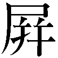

| 日本人の美徳を育てた「修身」の教科書 (PHP新書) | |
| 金谷俊一郎 | |
| PHP研究所 (2012) | |

日本人の美徳を育てた「修身」の教科書
金谷俊一郎
たき子の 手に かけていた 糸が、
もつれて からまりました。
糸を ほどこうとして、あせれば あせるほど、
糸は ますます からまっていきました。
たき子は 泣き出しそうになって、
お母さんに こう言いました。
「この もつれたところを 切りましょうか」
すると、お母さんは、
「しんぼうして ほどいていけば、ほどけないことは ありません」
とおっしゃいました。
たき子が、おちついて ほどいていくと、
とうとう もつれていた糸は ほどけたのです。
（昭和十年 二年生 十二「辛抱強く」）
このお話は、戦前の小学校二年生の「修身」の教科書に記されているものです。
何事も焦ってはいけない。焦らない子供、辛抱強い子供になることが大切なのだと、この文章では述べています。からまった糸は、必ずほどけるはずなのです。それを焦るから物事はうまくいかないのだ。
私は、このお話を読んで、大きな衝撃を受けました。
これは、本当に小学校二年生に向けられたお話なのだろうか。
私のような大人が読んでも、自らに対する強い教訓となるお話ではないか。
これを読んだ後、私は、
「子供たちは、本当に焦っているのだろうか」
と反問しました。
子どもたちが焦っているのではない。
実は、私たち大人が、子供たちを焦らせているのではないか。
焦っているのは、実は子供たちではなく、私たちなのではないかと。
「修身」とは、第二次世界大戦前の小・中学校の教科で、国民への道徳指導を目的としたものでした。しかし、その指導内容のなかに、天皇に対する忠誠心を育て、日本を軍国主義に導いてしまった要素が含まれているということで、第二次世界大戦後、ＧＨＱ（連合国軍最高司令官総司令部）によって停止されてしまいました。
たしかに、「修身」の教科書には、日本を不幸な戦争に導いてしまった要素が含まれていることも事実です。
しかし、それ以外の部分を見てみると、そこには、先ほどのお話のような、日本人が取り戻すべき、素晴らしい「美徳」のお話がたくさん記されているのです。
「修身」の教科書は、譬えれば、ふぐ料理のようなものです。そこには、滋味あふれた内容がたくさん含まれているにもかかわらず、たとえば軍国主義などのような、いわゆる「毒」のお陰で、食べにくいものになってしまい、敬遠されてしまっている。その、いわゆる「毒」のお陰で、「修身」全体が、まるで「悪」であるかのように受け取られてしまっている。お話のなかにある素敵な「美徳」までもが否定されることは、非常に悲しいことであると感じました。
「修身」の教科書に載っている、「美徳」のお話を埋もれさせてはいけない。
このままでは、日本人の素敵な「美徳」が失われてしまうかもしれない。
私は、そんな思いに突き動かされました。
そこで、本書では、「修身」の教科書に載っている「美徳」のお話を、そこに含まれている、行きすぎた天皇崇拝や軍国主義的な内容といった、日本を不幸な戦争に導くことになってしまったといわれる部分をすべて丁寧に取り除いて、どのような人にも安心して召し上がっていただけるように調理いたしました。
各章の本文につきましては、教科書の原文に記された意味と音感を損なわないように細心の注意を払いながら、現代に生きるわれわれでも読みやすいように、現代語に訳させていただきました。意訳は極力最小限にとどめさせていただいたつもりです。
本書では、「修身」の教科書のなかでも、改定を重ねてもっとも完成度が高く、かつ軍国主義に傾きすぎていない、第四期（昭和十二年～十四年）の小学校四年生から六年生までの「修身」の教科書の内容を収録しました。本書では、戦前の道徳教育の集大成ともいえる「修身」の教科書の決定版を、天皇崇拝や軍国主義といった部分をすべて取り除いた状態で読むことができます。戦前の小学校でおこなわれていた道徳教育のなかの「美徳」の部分を、すべて学ぶことができるものとなりました。
それぞれのお話の後には、「講義ノート」が記されています。これは、私自身が、各地の講演会で、「昔の教科書に載っているよいお話」を紹介する際にお話ししている内容です（一部、まだお話ししていないものにつきましては、このお話を紹介する機会に恵まれたら、どのようなお話をしようかという思いをめぐらせて書きました）。基本的には、学生さんや、若い方を対象とした企業研修などでお話ししている内容なので、ご年輩の方がご覧になると、ずいぶん偉そうなことを書いているという印象をお受けになるかもしれませんが、そこは、父兄参観にいらした親御さんの気持ちで読んでいただければと存じます。
また、それぞれの学年の最後には、その学年の修身の教科書の内容をまとめたお話が載っています（第一章の「よい日本人」、第二章の「日本人の美徳」、第三章の「教育」）。本書を一読した後も、折に触れてこのお話を読むことで、本書に書かれているエッセンスに触れることができます。
昔の子供たちは、ここに書かれている内容を声に出して朗読していました。皆さんも、「よい話だな」と思ったら、何度も何度も朗読してみることをおすすめします。また、「あれ？ この話はあまりよい話ではないかも？」と思ったお話については、これも騙されたと思って、一度声に出して読んでみることをおすすめします。そこに隠れている「よいお話の要素」に気づくかもしれません。
この前の東日本大震災でも、日本人は素敵な「美徳」をもった国民として、世界中から賞賛されました。これも先祖代々素敵な「美徳」のお話が、初等教育の現場で教えられ、受け継がれて、日本人のＤＮＡのなかに刻み込まれてきたからではないかと考えます。この「美徳」を、再び不幸な戦争に導くことのないように細心の注意を払いながら、後世に伝えていくことができればと願って、本書を執筆させていただきました。
本書を執筆するにあたって、私のような者が「昔の教科書に載っているよいお話」を講演することを快諾してくださった講演会の主催者様、ならびに講演会に足を運んでくださった皆さん、また、そのお話の書籍化に乗り出してくださいましたＰＨＰ研究所の皆さんに最大限の謝意を示します。
平成二十四年四月
金谷俊一郎
日本人の美徳を育てた「修身」の教科書 【目次】
私たちは、両親に孝行を尽くし、兄弟姉妹は仲よく暮らし、夫婦は互いに仲睦まじくしなければいけません。
友だちに対して、偽りの心や欺こうといった考えをもたず、誠実で正直な気持ちをもって交流し、つねに自分の気持ちを律して、勝手気ままにならず、しかも広く世間の人々に情けをかけることが大切です。
また、学問を修め、仕事のやり方を学び、自らの知識を深め才能を伸ばすことで、徳のある立派な人間となって、進んで社会全体のことを考えて、世の中の役に立つ仕事をしなければいけません。そして、つねに国の決まりを重んじ、きちんと法律を守ることが大切です。
それこそが、私たち国民のつとめですし、私たち日本人がこのように行動できるのは、私たちの先祖が築き上げてきた美風があるからです。
この教えは、昔も今も変わりなく、国の内外を問わず、不変の真理であるといえます。国民はみんなでこの教えを実行し、その徳を一つにしていくべきなのです。
【講義ノート】
それでは、最初の講義をはじめます。
皆さんのなかで、この文章を読んだことがある人はいらっしゃいますか。おそらく、ほとんどの方は、読んだことがないと思います。でも、この文章は、皆さんのよく知っている本当に有名な文章なのです。この文章の冒頭には次のように記されています。
「明治二十三年十月三十日、国民がおこなうべき道徳の基本を示すため、教育勅語が出されました。勅語にはこう記されています」
そう、これは教育勅語の文章なのです。ただ、この文章は、教育勅語の全文ではなく、教育勅語の文章から、天皇崇拝、軍国主義などといった内容を取り去ったものです。教育勅語というと、なにか恐ろしいことが書かれているような印象をもたれていた方も多いと思います。もちろん、日本を不幸な戦争に導いた原因の一つに教育勅語があったという考え方もできます。しかし、そういった部分を取り除けば、現代の日本人が忘れかけていて、取り戻すべき素晴らしい考え方が、ここには凝縮されているのです。
その証拠に、皆さんはこの文章を読んで、間違っていることや変だなと思うことが書かれていると思いましたか。むしろ、「結構いいことを言っているな」と思った人のほうが多いと思います。
この文章は、今からお話しする内容の、まさしくエッセンスが凝縮されたものといえます。ですから、この本を読んでいる最中でも折に触れてこの文章に立ち戻ったり、このページを手帳などに書き取って、昔の子供たちがしたように、機会のあるごとに口ずさんでみることをお勧めいたします。
この講義では、ここに記されているような、今の日本人が取り戻すべき、日本人の「美徳」についてお話ししていきたいと思います。
渡辺登は、田原藩（愛知県東部）の藩士で、号を崋山といいました。
小さいときから素直な人物で、よく父母の言いつけを守り、父母に心配をかけるようなことは少しもありませんでした。
十四歳のころ、家が貧しいうえに、父親が病気にかかってしまったので、暮らしはいっそう苦しくなりました。崋山は、父の背中をさすったり、薬を飲ませたりして、懸命に父を看病しました。また、看病の合間には、母親の手伝いをしました。それだけではありません。崋山は、「何か仕事をして、家の暮らしを助け、父母を安心させたいものだ」と、いつも考えていました。
崋山は、最初学者になろうと思って、学問を熱心におこなっていましたが、あるとき、親しい人を訪ねて、身の上相談をしたところ、
「君は学問が好きなようだから、学者になろうと思うことはよいことだが、それでは、今すぐ生活の助けにはならない。君は絵が上手だから、絵を描くことを稽古したほうがよくないか」
と、親切に勧められました。崋山は、それを聞いて「なるほど、そうだ」と思って、すぐにある師匠について絵を学び始めました。
父の病気は長引いて、二十年ばかりも床についていました。ときにはたいそう苦しんで、何日も食事ができないようなこともありました。崋山は、その長い間、生活を助けながら、まったく看病を怠けることなく、一心に父の病気が治ることを祈っていました。しかし、その甲斐もなく、父は亡くなってしまいました。
崋山の悲しみはたとえようもありませんでした。崋山は父を慕うあまりに、泣きながら、絵筆をとって父の顔かたちを写しました。
お葬式が済んだ後も、崋山は朝晩、着物を整えて、つつしんで父の絵姿に礼拝をしました。
孝行ハ 親ヲ安ンズルヨリ 大イナルハナシ
（昭和十二年 四年生 第四）
【講義ノート】
渡辺崋山（一七九三～一八四一）は、江戸時代後期の蘭学者です。歴史の教科書には、幕府の鎖国政策を批判したため、「蛮社の獄」で処罰され、獄中で自殺した人物と記されています。
ただ一方で、このお話にも出てくるように、現在、国宝に指定されている「鷹見泉石像」などの素晴らしい絵を残した画家でもあったのです。
もともと崋山は、学者になりたかったのですが、家計を助けるために絵の道に入りました。そのことが渡辺崋山を、国宝に指定されるような優れた絵を残す画家としてだけでなく、後の歴史に残るような立派な学者にしたのではないかと思えてなりません。
親を安心させようと懸命に孝行したことが、自分の身をも助けたといえるのではないでしょうか。自分のことだけを考えていたら、渡辺崋山という立派な画家は誕生しなかったのです。
渡辺崋山は、人の勧めで、ある師匠について絵を習うことになりました。
崋山は、母からわずかなお金をもらっては、紙を買い、昼夜を問わず熱心に稽古をしていましたが、師匠に十分なお礼をすることができなかったので、二年ばかりで破門にされてしまいました。
崋山は、一日も早く一人前の画家になって、父母を安心させようと思っていましたから、たいそう力を落として、泣き悲しみました。父は、それを見て、
「それくらいのことで力を落とすようではだめだ。ほかの師匠について、しっかり勉強するがよい」
と言って聞かせました。
崋山は、父の言葉に励まされて、別の師匠につきました。その師匠は、崋山のことを気の毒に思って、親切に絵を教えてくれ、崋山も懸命に勉強したので、崋山の絵はみるみる上達していきました。そこで崋山は、絵を描いてそれを売り、家計を助けながら、なお熱心に稽古に励みました。
その間に、崋山はまた学問にも励みましたが、学問に割く時間がなかったので、毎朝早く起きてご飯を炊き、その火のあかりで本を読みました。
艱難、汝ヲ玉ニス
（昭和十二年 四年生 第六）
【講義ノート】
国宝に指定されるほどの絵を残した崋山も、画家としての道のりは平坦なものではなかったようです。最初の師匠に破門され落ち込んでいるときに、父の励ましにより、崋山は再度奮起しました。崋山がこのように奮起できた背景には、「両親を楽にさせたい」という気持ちがあったと考えられます。その強い気持ちが原動力にあったからこそ、崋山はどのような艱難辛苦も乗り越えて、立派な画家になっていったのです。
崋山は父がいなくなってから、父の跡を継いで、だんだんと重要な仕事を任せられるようになりました。
崋山は、非常に規律正しく生活をする人でした。重要な仕事に任じられて、どれだけ忙しくなっても、家にいるときは、時間割を作って、朝・昼・晩、それぞれの時刻に割り当てた仕事を、そのとおりにおこないました。
時間割は、以下のようなものでした。
一、午前四時から午前六時まで これまで読んだ本の復習をすること。また、その日にすべきことを考えること。
一、午前六時から午前八時まで 本を読むこと。あるいは子供たちに教えること。
一、午前八時から午前十時まで 前の続き。あるいは、刀のけいこ。
一、午前十時から正午（十二時）まで 人から頼まれた絵を描くこと。
一、正午（十二時）から午後二時まで 前の続き。あるいは、殿様や親に仕えることや、お客に会うこと。
一、午後二時から午後四時まで 前の続き。
一、午後四時から午後六時まで 昔の名高い絵を手本にして、一心に習うこと。
一、午後六時から午後八時まで 読みたい本を読んだり、書き抜いたり、または文章を書いたりすること。
このように崋山は、毎日のやることを決めて、規律正しくそれを実行したので、絵がたいそう上手になって、人々にもてはやされただけではなく、学問も進んで、世間のためになったので、立派な人として敬われることになりました。
（昭和十二年 四年生 第七）
【講義ノート】
前にも述べたように、渡辺崋山は優れた画家であっただけではなく、蘭学者としても高名な人物になりました。崋山が多くのことを成し遂げられたのは、このように規律を守った生活を実践していたからにほかなりません。一日の時間はすべての人に平等に与えられていますが、それを上手に活かすには、このくらい自分に厳しくなければいけないのでしょう。
人はえてして目先の結果ばかりを追い求めてしまいますが、素晴らしい成果を残したいと思ったら、自分を律して、自らのやるべきことにまい進することが必要なのだと、この文章は語りかけているような気がしてなりません。
種痘の方法を発明した人は、ジェンナーというお医者さんです。
この方法を発明するまで、ジェンナーは長い間、多くの苦労を重ねてきました。
ジェンナーは、今からおよそ二百六十年ほど前、イギリスに生まれました。ジェンナーは、少年のころ、ある医者の弟子になっていました。
ある日、牛乳搾りの女性が診察をしてもらいにやってきました。その女性は、顔一面にひどい吹き出物が出ており、見るも哀れな様子をしていました。ジェンナーは、その女性を見て、なんて気の毒な病気なのだろうと思いました。この女性を診察した医者は、
「これは、天然痘ですね」
と言いました。すると、その女性は、
「私は牛痘にかかったことがありますから、天然痘にかかるはずはありませんが」
と不思議そうに言い返しました。
ジェンナーは、この会話をそばで聞いていて、「これは不思議な話だ。ひょっとしたら、この女性の言うことには、何か深い理由があるのかもしれない。それを研究して、よい治療法を発明し、この女性のような気の毒な病人を救ってやりたい」と考えたのです。
それから、ジェンナーは人間の体に牛痘を植えつけて、天然痘を予防することを思い立ちました。ジェンナーが友人にその話をすると、みんなジェンナーのことを馬鹿にして、
「そんなことを言うなら、お前との付き合いをやめる」
とまで言ってきたのです。ジェンナーは、それでもかまわず、二十年余りの間、牛痘や天然痘のことをいろいろと研究し、さまざまな実験を重ねていきました。その甲斐があって、とうとうジェンナーは種痘の方法を発明したのです。
ジェンナーは、まず子供に牛痘を植えつけてみて、そのあと天然痘の毒をうつそうとしましたが、天然痘はうつりませんでした。そこでジェンナーは、このことを本に書いて、世間の人々に知らせました。
ところが世間の人々は、このよい発明を信じないで、
「牛痘を植えつけられた子供は、顔が次第に牛に似てきて、声も牛が吠えた声のようになる」
などと、ジェンナーの悪口を言う者まで出てきました。しかし、ジェンナーはこの発明が人々のためになることを信じて、ますます一心に研究を続けました。
そのうち、ジェンナーの発明した種痘が、人命を救う素晴らしい方法であることが、知れ渡り、広く世間でおこなわれるようになりました。今では私たちも、みんな彼の発明の恩恵を受けているのです。
（昭和十二年 四年生 第八）
【講義ノート】
天然痘は、その致死率が四〇％を超えるといわれた病気で、「悪魔の病」と呼ばれ、この病気がもとで、国や民族が滅びた例もあるほどの深刻な病でした。しかし、ジェンナー（一七四九～一八二三）が種痘の方法を発明したおかげで、天然痘で死ぬ者は激減し、現在では、天然痘という病は世界から撲滅されてしまいました。
この発明の原動力は、どこにあると思いますか。
ジェンナーは、「気の毒な人を救いたい」「世のため人のためになりたい」という強い気持ちをもっていたのです。だからこそ、乳搾りの女性の何気ない言葉に耳を傾けることができたのでしょうし、周りの非難や嘲笑に負けることなく、自らの研究を続けることができ、人々を救う素晴らしい功績を残すことができたのだと、この文章は語りかけているような気がしてなりません。
ある町に、目を患っていたおばあさんがいました。
そのおばあさんは、迷信の深い人で、前に、ある場所のお水が目の病によいということを聞いたので、そのお水をもらってきて、毎日目を洗っていました。
しかし、何日たっても少しも効き目がなく、病気はだんだん重くなっていくばかりでした。
ある日、お見舞いに来た親類の人が、おばあさんの様子を見て、ものすごく驚きました。親類の人は、嫌がるおばあさんを、無理やり医者のところに連れていきました。医者は、おばあさんを診察して、
「これは、ひどいトラホーマです。右の眼は、もう手遅れなので、治すことはできません。左の眼は、まだ治る見込みがあるので、治療してみましょう。でも、左の眼も、もう少し遅れていたら、手の施しようがなかったでしょう」
と言いました。
その後、おばあさんの左の眼は、治療を受けたおかげで、まもなく治りました。
おばあさんは、
「自分の愚かさゆえに、道理に合わないことを信じてしまって、まったく目が見えなくなってしまうところでした。恐ろしいのは迷信です」
と、つねづね人に話すようになりました。
（昭和十二年 四年生 第九）
【講義ノート】
人は、不安な気持ちになると、迷信などに頼ってしまうものです。たしかに、一人でしっかりと生きていくことはつらいので、そういったものにすがってしまう気持ちはわからなくもありません。しかし、道理に合わないことにとらわれすぎると、このおばあさんのように痛いしっぺ返しを受けてしまうことになると、この文章は訴えかけています。（トラホーマ＝封入体結膜炎）
伴信友は、いつも健康に気をつけて、年を取るまで学問の研究につとめましたので、一生の間に有益な本をたくさん著すことができました。
信友は、いつも姿勢に気をつけました。朝起きたときと、夜寝るときには、姿勢を正しくして座り、体に元気が満ちてくるように感じるまで、三、四十回、静かに息を深く吸い込み、しばらくして息を吐き出しました。
一日じゅう、机に向かって勉強しているときでも、少しも姿勢を崩しませんでした。
信友は、また、自らの精神がだらけないようにしようとつとめました。
夏の真っ盛り、どうかすると気持ちがだれるようなときには、天井から刀を吊るし、その先が頭の上とすれすれになるようにして、本を読みました。また、冬の寒い日でも、こたつを用いませんでした。家の人が心配して、こたつに入るように勧めても、
「精神が引き締まらないから」
と言って、聞きませんでした。
信友は、朝は早く起きました。そして顔を洗うときには、冷たい水で頭を冷やしました。信友は、家の人たちに対しても、
「鶏の鳴くころに起きることが難しければ、夜明けでいいから起きなさい」
と言って早起きを勧めたので、家じゅうが早起きの習慣になりました。
信友は、朝夕、庭に出て弓を引きました。また、刃をつぶした刀を取って、何百回も素振りをしました。こうして暑いときでも寒いときでも、一日も運動をやめることはありませんでした。
信友は、このように身体を鍛えたので、年を取っても丈夫で、たくさんの本を著すことができたのです。
（昭和十二年 四年生 第十）
【講義ノート】
伴信友（一七七三～一八四六）は、江戸時代後期の国学者です。本居宣長の考え方に感銘を受け、宣長の死後、彼の門人になり、多くの著作を残した人物です。
人間は、どうしても怠けてしまうものです。怠けようと思えば、いくらでも怠けられます。そこから自分を奮い起こすことができなければ、立派な人間になることはできないのです。日ごろから信友のように身体の鍛錬を通じて、その精神も鍛錬したいものです。
二百十日（九月一日ころ）を過ぎたある日のことでした。
四年生の級長だった勇太郎は、いつものように、朝早く学校へ行きました。もう当番の者が二、三人来ていました。
クラスの人も、だんだんやってきました。
昨日からの蒸し暑い天気は、今朝になって雨になり、風も加わってきました。夕べのラジオの天気予報では、明日は嵐になるかもしれないと言っていましたが、人々はそれほど気にかけてはいませんでした。
しかし、朝の授業が始まる前から、にわかに風がはげしくなってきました。道行く人は傘を吹き飛ばされ、屋根は瓦をはがされ、看板は吹き飛ばされ、とうとう道も歩けないほどの大風になってしまいました。
クラスのみんなは教室のなかほどに集まりました。勇太郎は、元気な者たちと、はずれかけたガラス窓を押さえていましたが、そのうちに一段と強い風が吹いてきて、校舎をはげしく揺り動かし、運動場の大きな木を根元から吹き倒しました。その恐ろしい光景を見て、クラスのみんなは真っ青になりました。
勇太郎は、「これは危ない」と思って、
「みんな、机の下にかがめ」
と大声で注意しました。みんな机の下にかがみました。校舎は、六、七回も大揺れに揺れました。勇太郎は続いて、
「みんな、頭にかばんをのせて」
と叫びました。そうなると、もう泣き出す者さえ出てきました。勇太郎は、
「泣くな」
とみんなを励ましました。
ちょうどそのときです。校舎は大きな音を立てて、どうっと倒れてしまったのです。
勇太郎は、倒壊した校舎の暗いなかで、やっとのことで出口を見つけ出しました。そこからクラスのみんなを外に出し、自分は、後に残って、逃げ遅れた者のいないことを確かめて、最後に外に出ました。
外は、土手から流れ込んできた川の水が、運動場一面にあふれていました。勇太郎は、浮かんでいる一本の丸太にまたがって、両手で水をかきながら、クラスのみんなが避難している場所にたどり着きました。
こうして、勇太郎の沈着な働きにより、クラスの者は全員、無事に助かったのです。
（昭和十二年 四年生 第十一）
【講義ノート】
冷静な行動。あわててしまうような状況におちいったときこそ、いかに冷静な行動を取ることが重要かを、このお話は訴えかけています。
全員が「自分だけ助かろう」という気持ちをもってしまうと、現場は大混乱になり、助かるものも助からなくなってしまいます。
こうした災害時のみならず、いかなる場面でも、全体のことを考えて、いかに冷静沈着な判断ができるかが重要になってくるのではないでしょうか。あわてるとだめです。
円山応挙は、毎日、京都の 園の八坂神社に行って、たくさんの鶏が遊んでいる有り様をじっと見ていました。人々は、応挙の様子を見て、馬鹿者ではないかと思いました。
園の八坂神社に行って、たくさんの鶏が遊んでいる有り様をじっと見ていました。人々は、応挙の様子を見て、馬鹿者ではないかと思いました。
このようにして、一年を過ごした応挙が、ついたてに鶏の絵を描くと、まるで生きているかのような絵になったのです。
そのついたては、八坂神社に納められました。それを見る人々は、みんな立派だと褒めるだけでしたが、ある日、野菜売りのおじいさんが、しばらく見ていた後、
「鶏のそばに草が描かれていないのが、たいそうよい」
と独り言を言いました。その話を人づてに聞いた応挙は、おじいさんの家へ行き、そのわけを尋ねたところ、おじいさんは、
「あの鶏の羽の色は、冬のものです。だから、そばに草が描かれていないのが、たいそうよいと思ったのです」
と答えました。それからも応挙は、町を歩いていても、鶏がいると足を止めて、その様子をじっと見つめて、いつまでもいつまでも動こうとしないことがよくありました。このように熱心であったため、応挙の描いた鶏には、誰も及ぶ者がいませんでした。
また、あるとき応挙は、寝ている猪を描こうとしました。しかし、まだ生きている猪を見たことがないので、応挙の家によく来る柴売りの女性に、猪を見つけたら知らせてくれるように頼んでおきました。
ある日、その柴売りの女が、
「今、猪を見つけました」
と言って、知らせに来ました。応挙が、飛び立つ思いで、さっそく駆けつけますと、なるほど、竹やぶのなかに一匹の大きな猪が寝ておりました。応挙はじっと猪を見て、手早くそれを写生して帰りました。
まもなく立派な猪の絵ができあがりました。その絵を、ある日、鞍馬から来た炭売りのおじいさんに見せました。炭売りのおじいさんは、しばらくその絵を眺めていましたが、
「これは、病気にかかっている猪を写したものではないでしょうか。猪は、眠っていても、背中の毛が逆立ち、足にも力が入っていて、なかなか人をそばに寄せつけない勢いがあるものです」
と言いました。
その後で、さっきの柴売りの女がやってきて、
「あの猪は、まもなくあそこで死にました」
と知らせてきました。それを聞いた応挙は、せっかく苦心して描き上げた絵を破ってしまいました。そうしてあらためて、元気な猪が寝ているところを見て、精一杯の力を込めて描き上げました。
それを炭売りのおじいさんに見せたところ、
「これです、これです。このとおりです」
と言って感心しました。
世間の人も、この絵を見て褒めそやし、応挙の評判は一気に上がったのです。
（昭和十二年 四年生 第十二）
【講義ノート】
円山応挙（一七三三～一七九五）は、江戸時代中期の画家です。円山派の祖で、写生画の技法を確立した人物として非常に有名です。お話に出てくる鶏の絵は「双鶏図」といって、今でも京都の八坂神社に納められていますが、納められた当初、鶏があまりにもリアルなので逃げ出すのではないかと心配する者がいて、しばらく金網をかぶせておいたという逸話もあるくらいです。
今は、インスタント時代なのかもしれません。早く結果を残そう、早く結果を残そうとして、誰かのやったことをコピーして貼りつけることで、自分が何かを成し遂げたような気になってしまう。それでは本物は生まれないし、そのようなものはすぐに廃れてしまうのです。円山応挙のように、じっくりと本物を追求していけば、それは必ず人々に評価され、長い年月残っていくものであると、この文章は語りかけているような気がしてなりません。
近江に、高田善右衛門という人がいました。家は、醤油の醸造業を営んでいました。
善右衛門は、少年のころから、よく家業を手伝っていましたが、末っ子だったため、「後には独り立ちをして、自分で働いて、新たに家を起こそう」と決心しました。
善右衛門は、十七歳のとき、父からわずかのお金をもらい、それを元手にして、行燈の芯と笠を仕入れて、遠い山国まで商売に出かけました。道には険しい山や坂が多かったため、善右衛門は、かさばった荷物をかついで登るのに、たいそう難儀をしました。あるときなど、一度に荷物を持って上がることができず、片方ずつ荷物を運び上げて、やっと山の坂を越えたこともありました。
また、ときにはさびしい野原も通らなければなりませんでした。けれども善右衛門は、手足の凍えるような寒い日でも、焼けつくような暑い日でも、少しも怠けようとは思いませんでした。雨が降っても、風が吹いても、一日も休まず村々を廻って、商売に精を出しました。後に善右衛門は、手広く商売をおこなうようになり、呉服類まで仕入れて売り歩きました。
このようにして善右衛門は、人に頼らず、ただ一本の天秤棒を頼りにして商売に励んだため、だんだんと立派な商人になりました。
あるとき善右衛門は、商売の荷物を持たないで、いつもの宿屋に泊まりました。すると顔なじみの女中が出てきて、
「今日は、お連れ様はいらっしゃいませんか」
と言いました。善右衛門は不思議に思って、
「私は、いつも一人で来ているではないか。お連れ様とはどなたのことですか」
と尋ねました。すると女中は、
「それは、天秤棒のことでございます」
と言いました。
善右衛門は、自分の子供たちに、
「私は、最初から他人に頼らず、自分の力で家を起こそうと決心して、精を出して働き、倹約な生活をおこない、正直を心がけ、必要以上の利益を得ようと欲張ることをしなかったので、今のような身の上になったのだよ」
と言って聞かせました。
（昭和十二年 四年生 第十三）
【講義ノート】
他人に頼って生きようとする人が多すぎるような気がします。自分で頑張ろうとせずに、他人を頼りにする。そして、できなかったら、それを他人のせいにしてしまう。そういった人が多いような気がします。もちろん、みんなで助け合うことは素晴らしいことです。しかし、それと他人に頼り切ることとは話が違います。自分の力で一歩を踏み出していかなければ、何事も成し遂げられないのです。他人に頼り切らず、また他人から奪い取ったり、必要以上に欲張りになったりせず、自分の足でしっかりと歩んでいく人は、きっと善右衛門のような立派な成功者になっていくはずです。
高崎正風は、 摩の武士の家に生まれました。
摩の武士の家に生まれました。
正風が九歳のときでした。ある日、朝ご飯のときに、
「おかずがまずい」
と言って食べませんでした。召使いが、何か別のおかずをこしらえようとしますと、隣の部屋にいた母が来て、
「お前は、武士の子でありながら、食べ物についてわがままを言いますか。昔、戦のときには、殿様でさえ、召し上がる物がなかったこともあるというではありませんか。どんな苦しいことでもがまんしなければ、立派な武士にはなれません。このおかずがいやなら、食べないがよろしい」
と言って、正風のお膳を持ち去ってしまいました。
正風は、母の仕打ちをひどいと思いました。しかし、後で自分のわがままであったことに気づいて、なんべんも母に詫び、姉も一緒に詫びてくれたので、やっと許されました。そのとき、正風は、母に向かって、
「これからは、食べ物について、決してわがままは申しません」
と誓いました。
それからは、この誓いを守り、食べ物について、一生わがままを言いませんでした。
そればかりではなく、どのような難儀なことに出くわしても、いつもよくがまんをしたので、正風は、後には立派な人になりました。
（昭和十二年 四年生 第十四）
【講義ノート】
高崎正風（一八三六～一九一二）は、幕末の摩藩士です。武力討幕に反対して西郷隆盛らと対立したため、明治時代になってからは出世街道から外れてしまいますが、そのことが、彼の作詞家としての才能を開花させました。正風は後に、多くの唱歌の作詞をおこない、歌人としても優れた和歌を数多く残しました。
皆さんのなかには、このお話を聞いて、「食べ物のわがままくらい言ってもいいじゃないか」と思った方もいると思います。たしかに、食べ物のわがままは、わがままのなかでも些細なものなのかもしれません。でも、その些細なわがままを許してしまうと、そこからまるで堰を切ったかのように、わがままが増大して、ついには、わがままでどうしようもない人間になってしまうものなのです。そのことを、高崎正風の母は教えたかったのかもしれません。
貝原益軒という名高い学者がおりました。
世の中のためになるよい本をたくさん著しましたが、普段は非常につつしみ深い人で、差し出がましいことを言ったりはしませんでした。
ある年、船旅をしたときのことです。長い旅のことですから、乗り合いの人々はみんな退屈していました。そのなかに一人の若者がいて、物知り顔で、ずっとしゃべり続けていました。そのうち若者は、大勢の前で鼻高々に、経書（儒教の経典）の講釈をはじめました。
人々は、最初のうちは、若いのに珍しい男だと思って、この男の話を聞いていましたが、若者の様子がいかにも傲慢で、年下の人に物を教えるような話しぶりなのにあきれてしまい、顔を見合わせて苦笑いする者や、背中を向けて別の話をはじめる者もいました。
しかし、そのなかで益軒だけは、最後まできちんと座って、その男の話を聞き、一言も口出しをしませんでした。
船が港に到着しました。人々は長い退屈な船旅を終えて、ほっとして岸に上がりました。そうして別れるとき、互いに自分の生まれ故郷と名を告げました。益軒も、
「私は福岡藩の藩士、貝原久兵衛という者です」
と告げました。それを聞いて一番驚いたのは、あの若者でした。若者は、さすがに益軒の名が「久兵衛」であることを知っていました。
あの大学者である益軒先生だったと知ると、さっきまでの傲慢さはどこへやら。その若者は、自分の名も言わず、逃げるようにこそこそと立ち去ってしまいました。
（昭和十二年 四年生 第十五）
【講義ノート】
貝原益軒（一六三〇～一七一四）は江戸時代初期の儒学者で、本草学（薬草学）者でもあった人物です。『大和本草』という日本で最初の本格的な本草書や、『女大学』という女性に対する修身書を著したことで有名な人物です。
ここでは、「傲慢」と「謙 遜」について話しています。「傲慢」でいることで、よいことは一つもありません。この若者のように、周りの人々から煙たがられ、そして最後には大恥をかいてしまうものです。自分がもっているものは、人に見せびらかして自慢するためにあるものではないのです。益軒先生のように、謙虚であるほうが、むしろ人々から好かれ、人々から評価されるものなのです。
貝原益軒には、とりわけ大切にしている牡丹の花がありました。その花は、今を盛りと庭先に咲いていました。
ある日、益軒がつとめに出た後で、留守番をしていた書生が、隣の友だちと、庭で相撲をはじめました。互いに「えいや、えいや」ともみ合っているうちに、どちらかがどうしたはずみか、その牡丹を折ってしまいました。
「しまった」
と書生が思ったときは、もうだめでした。相手の友だちと、あわてて枝を起こしてみたり、花をつないでみたりしましたが、もちろん折れてしまったものは、どうにもなりません。しばらくおろおろしていた末に、隣の主人に頼んで、詫びてもらうことにしました。
やがて益軒が帰ってきました。隣の主人は、書生を連れて益軒の前に出ました。書生は、何と言って叱られるかと思い、身を縮めていました。
ところが、隣の主人から話を聞いて、益軒は静かにこう言いました。
「私は、楽しむために牡丹を植えておきました。ですから、牡丹のことで怒ろうとは思いません」
（昭和十二年 四年生 第十六）
【講義ノート】
このお話のすごいところは、益軒が書生のことを許した理由にあると考えます。普通ならば、「わざとやったのではないのだから」といった理由で許すものです。しかし、益軒は、「牡丹は楽しむために植えた。楽しみのためのもので怒るのは本末転倒である」と言い放って、書生のことを許したのです。
このお話から、寛大さだけではなく、もっと大切な、人としての物の考え方を学ぶことができるのではと思えてなりません。
小太郎の村は、山奥の小さな村です。
きれいな川が、北から南へ、村の真ん中を流れています。春はれんげ草や菜種の花が、青々とした麦畑や桑畑の間を彩り、夏は、清い川に若鮎が躍ります。周りの山々には、杉や松がこんもりと茂って、美しい景色です。
今は秋の半ばで、小高い丘から眺めると、田んぼには、稲穂が黄金の波を打っています。ちょうど稲刈りがはじまったころです。そこかしこに稲を刈る人が、日焼けした顔をしてせっせと働いています。
小太郎の村には、三百軒ほどの家があり、人口は千五百人あまりです。おおかたは農家で、商売をする家が少しばかり、村役場のある場所に並んでいます。村役場の近所には、学校や郵便局があります。
山のふもとには、氏神様があります。天神様といって、菅原道真公という忠義の人をおまつりした社です。お祭りの日には、たくさんの参詣人があって、それはそれはたいそうなにぎわいです。社の境内は、青年団の人たちが毎日掃除をするので、いつもきれいです。
川に沿って立派な道路が通っていて、乗合バスも通っています。村じゅうどこの小道も、でこぼこがなく、石ころや紙切れもよく拾われています。また、四つ角には道しるべが建てられ、よそから来た人でも、道に迷うようなことはありません。
村では養蚕がさかんですが、最近は、よい梨が採れるようになって、村の外にたくさん出荷しています。梨の季節になると、道ばたの手の届くようなところに、みごとな梨がなっていますが、それを盗もうとする者はおりません。
税金を納める時期になると、赤と白とに染め分けた旗が、高いところに立ちます。早く税を納めるようにとの告知ですが、遅れて税を納めるような人はいません。
村を出て南米に行き、そこでさかんに農業をしていた人が、このあいだ久しぶりに村に帰ってきました。そして小太郎の学校へ来て、南米の面白い話をしました。その人は、話の最後にこう言いました。
「どこへ行っても、忘れることができないのは、自分のふるさとです。子供のころ、友だちといっしょに登ったあの山や、いっしょに泳いだあの川は、遠くにいても忘れられません。いつもこの懐かしいふるさとが、ますます栄えるようにと祈っています。今回、久しぶりに帰ってみますと、ここにおいでになる校長先生と村長さんが、いっしょに青年団のお世話をなさり、また青年団の人たちも一生懸命に働いたので、前にはたいそう貧乏であったこの村が、今では見違えるように栄えていました。皆さんも、青年団の人たちにならって、もっともっと私たちの村が栄えるようにしてください」
そのとき話をする人の目にも、校長先生の目にも、涙が光っていました。
小太郎たちは、「大きくなったら、自分たちの村を日本一のよい村にしよう」と決心しました。
（昭和十二年 四年生 第十八）
【講義ノート】
ふるさとがあることは素晴らしいことです。しかも、そのふるさとが、この素敵な日本であることの幸せ。四季に恵まれ、豊かな自然にあふれ、人々は真面目で清く美しい心をもっている。このことに感謝しながら、日々生きてもらいたいものです。小太郎と同じ決心を、皆さん一人ひとりがもつようになれば、もっともっと素敵なふるさとになっていくような気がしてなりません。
日本海方面の海岸では、秋の末から春先にかけて、海からはげしい風がよく吹きます。そのために砂の多い海岸では、広い広い砂山ができているところもあります。
秋田県の海辺の村々では、その風がとくにはげしく、吹き寄せた砂のために、家も田畑も埋められ、暮らしが成り立たなくなる家がたくさんありました。
ある年、栗田定之丞という人が、その地方の砂留め役となりました。定之丞は、まず村々を見て回りましたが、海辺は見通しもきかないほどの広い砂山でした。
「これだけの砂をどうやったら防ぐことができるのだろう」
と、ただ途方に暮れるばかりでした。
しかし、定之丞は同時に、この砂山が田畑を埋め、これから後、百年も二百年も村々の人々が苦しめられどおしになることを思うと、じっとしてはいられない気がしました。
「よし、戦場に出たつもりで、精根が続くかぎり風や砂と戦ってみよう」
と、定之丞は固く決心をしたのでした。
そこで定之丞は、これまで砂留めに尽力していた年寄りを呼んで、いろいろと話を聞きました。定之丞は、この場所にまずグミの木や柳の木を植え、いくらか砂がしまったところで、松の苗木を植えようと考えました。
定之丞は季節を考え、植え方に工夫をして、寒中それもなるべく風の吹く日を選んで、人々を呼び集めて仕事をさせました。なぜなら、風の吹く日は砂の吹き寄せられる方向がよくわかるからです。風上のほうで、萱の束などで風よけをして砂を防ぎ、その陰に、最初はグミや柳の枝を差させました。すると、それらの枝はみんな芽を吹くようになったのです。そこでさらに松の苗木を植えさせました。定之丞はこの方法で仕事を進めていきました。
ところが、人々は風の吹く寒い日に働くのがつらいのと、本当に松林ができるということが信じられず、なかなか定之丞の言うことを聞きません。
定之丞は、子供に諭すようにやさしく道理を言い聞かせ、自ら先頭に立って働きました。朝は夜の明けないうちから仕事場につめかけ、夜は人々を帰らせた後まで居残って明日の仕事の段取りをつけていました。ときには冷たい砂の上に伏して、風の当たり具合を確かめたこともあります。
やがて村の人々も、定之丞の熱心さに突き動かされ、仕事に協力するようになりました。その結果、たくさんの苗木を植え込むことができたのです。その苗木は次第に大きくなって、ついには立派な松林へと成長していきました。
定之丞は二十年余りにわたって、方々で砂留めの仕事に尽力しました。そのため、風や砂の心配がなくなり、麦や粟などの畑もあちこちに開け、ショウロやハツダケといったキノコも生えるようになりました。この地方の人々は、定之丞の恩をありがたく思い、定之丞のために栗田神社という社を建てて、今日まで毎年お祭りをしています。
社は、現在の秋田市の町外れにあります。そこから見渡す海辺には、定之丞が植え込んだ三百万本もの松林が続いて、青々とした美しい色をたたえています。
（昭和十二年 四年生 第十九）
【講義ノート】
栗田神社は、現在の秋田市新屋栗田町に今でもあります。また、栗田定之丞（一七六八～一八二七）のお話は、司馬遼太郎さんの紀行文『街道をゆく』（29 秋田県散歩、飛紀行 朝日新聞出版）にも紹介されています。
ここでは、栗田定之丞という、自らの使命に燃えた人間のお話が紹介されています。自らの使命が人々の利益（＝公益）と結びついたとき、これだけの力を発揮するのだということに、驚きを感じます。定之丞の情熱は、公益と結びついていたからこそ、人々の気持ちを動かしたのです。この文章は、そのように私たちに語りかけているような気がしてなりません。
明治六年、はるばる支那（中国）へやってきたドイツの商船ロベルトソン号は、ある日、海上で大嵐に遭いました。
船は帆柱を吹き折られ、ボートを押し流され、荒れ狂う荒波に三日三晩揺られて、九州のはるか南方、沖縄の宮古島の沖に吹き流されました。
しかし、運悪く、船は暗礁に乗り上げてしまったのです。船員たちは、波にさらわれまいと、壊れた船に懸命にしがみついて、助けを求めました。
難破したロベルトソン号を見つけた宮古島の見張りの者は、さっそく役人に知らせて、人々を集めました。
役人は、より抜きの船の漕ぎ手や医者を連れて港に駆けつけ、村の人たちと協力して助け船を出しました。しかし、逆巻く荒波を乗り越えて船を進めることは、どうしてもできません。やがて日はとっぷりと暮れてしまいました。
人々はしかたなく引き返しましたが、丘にかがり火をたくことで、難破した船の乗組員を励ましながら、夜を明かしました。
明くる日になると、風も衰え、波もいくらか静かになりました。島の人々は、「今日こそは」と勇み立ち、飲み水やおかゆなどを用意して、大波のなかへ乗り出していきました。
危険な岩の間をくぐり、大波に揺り上げられ、揺り下げられしながら、力のかぎり船を漕いで、やっとのことでロベルトソン号にたどり着きました。
そして、身の危険も忘れて、疲れ切っていた船員たちを残らず助けて帰ってきたのです。危ない命を助けられた船員たちの喜びは、どれほどのものであったでしょう。
島の人々は、薬を飲ませたり、怪我の手当をしたりして、船員たちを介抱しました。しかし、言葉が通じないため、どこの国の人だかわかりません。そこで、いろいろな国の国旗を取り出してみせて、はじめてドイツの人であることがわかりました。
その後、一カ月余りの間、親切に世話をしているうちに、船員たちは、みんなすっかり元気になりました。
そこで、島の人々は船員たちに船を貸して、本国に帰らせることにしました。出発の日には海岸に出て、鐘や太鼓をたたいて見送りました。役人たちは船に乗って、水先を案内しながら、はるか沖合まで送っていきました。
船員たちは、月日を重ねて本国に帰り着きました。そして嬉しさのあまり、会う人ごとに、この親切な日本人のことを話しました。
そのことが、いつしかドイツ皇帝の耳に届きました。ドイツ皇帝は、島の人々の親切をたいそう喜んで、軍艦を派遣して、宮古島に記念碑を建てさせました。その記念碑は今もなお残って、長くこの博愛の美談を伝えています。
（昭和十二年 四年生 第二十）
【講義ノート】
このお話は、昭和十二年に文部省が全国から募集した「知らせたい美しい話」で、一等に選ばれ、修身の教科書に採用されたものです。
困ったときには命をかけて助け合う。そこには国境や人種、その他諸々の壁といったものはありません。別に立派なことをする必要はないのです。自分のできる範囲で精一杯のことをする。宮古島で普通に暮らす普通の人たちのように、自然とそういったおこないができるような人間になりたいものです。
ちなみに、この記念碑は、現在でも宮古島にあります。県指定史跡「ドイツ皇帝博愛記念碑」です。宮古島を訪れた際には、ぜひとも訪ねてみてください。
野口英世は、三歳のとき囲炉裏に転がり落ちて、ひどいやけどをしました。母の懸命の介抱により、命だけは助かりましたが、左の手に大きな傷が残り、指先の自由がきかぬ身体になりました。
五歳、六歳となって、英世は、外に出て近所の子供たちと元気に遊ぶようになりましたが、競争で英世が勝ったときなどは、負けた子供たちは悔しまぎれに、英世の不自由な手のことを笑いました。
小学校に行くようになっても、友だちはやはり英世の手のことを笑いました。英世は、それを残念に思い、
「たとえこの手は不自由でも、一心に勉強して、きっと今に立派な人になってみせるぞ」
と固く心に誓いました。
英世は、家が貧乏でしたから、毎朝早く起きて、近所の小川や沼に行って川魚を採ってきて、それを売り、そのお金で筆や墨などを買いました。
また、夜に本を読みたくても、灯りを点すことができませんでしたから、冬は囲炉裏のたき火を頼りにし、夏は学校の用務員室に行って、ランプの光で本を読みました。
こうして英世は、尋常小学校を優秀な成績で卒業しました。
その後、英世はある人の世話で、高等小学校に行くことができました。英世は、遠い道を通って一生懸命に勉強し、成績はいっそうよくなっていきました。
そのうちに、人々の助けで英世は手の手術を受けることができ、前よりも手が自由に使えるようになったのです。
手がよくなったことをきっかけに、英世は、医学というものが人を助ける学問であることを知り、医学を通じて、世のため人のために尽くしたいという志を立てました。
そこで英世は、高等小学校を卒業すると、自分の手を手術してくれた医者の先生に頼んで、その人の弟子にしてもらいました。
それから、英世は何かに憑かれたかのように勉強に没頭していきました。
医者の先生の手伝いをする合間に、たくさんの医学の本を読み、外国語の勉強までしました。
その後、英世は東京に出て、二十一歳のとき医者になるための試験を受けると、みごと合格し、一人前の医者になりました。
それからますます研究を進めるために、アメリカ合衆国に渡り、昼も夜も怠らずに勉強しました。
そうして、英世は、医学の上で立派な発見をして、世界的にも名高い学者になりました。
また、いろいろな難しい病気を治す方法を駆使して、人々を助けました。
昭和三年、アフリカに渡って人々が恐れていた黄熱病を研究しているうちに、その病気がうつってしまい、英世は五十三歳で、アフリカの地で亡くなってしまいました。
人々は英世のことを、「あっぱれ、人類の恩人」と言って、彼の死を惜しまぬ者はいませんでした。
（昭和十二年 四年生 第二十一）
【講義ノート】
皆さんは、一度は野口英世（一八七六～一九二八）のお話を聞いたことがあると思います。しかし、野口英世の人生が、何を訴えかけているかについて考えたことがある人は少ないと思います。
野口英世の人生から学ぶべきことは二つあるのではと考えます。
一つめは、「障害に負けるな」ということです。医学は手先の熟練さを要求される仕事で、手に障害のある英世にとっては、本来もっとも向いていない仕事です。しかも英世は、普通の人では考えられないような素早い手さばきで、実験を何千回も何万回も繰り返すことで成果を残していきました。医者になる上で致命的な障害をもった英世ですら成し遂げられたのです。ですから皆さんは、どんなことでも成し遂げられるはずです。
もう一つは、「志を立てよ」ということです。その志は、世のため人のためであれということです。英世が医学を志す出発点は、「医学を通じて人を助けたい。世のため人のために尽くしたい」という思いです。決して名声を得て、お金持ちになりたいといったことが出発点ではありませんでした。
だからこそ、英世は世のため人のためになる研究を成し遂げることができたわけですし、その結果、世界中の人々から「人類の恩人」という最大級の賞賛を受けるような人物になったのではないでしょうか。
豊臣秀吉は、木下彌右衛門の子で、尾張（今の愛知県）の貧しい農家に生まれました。秀吉は、わずか八歳のときに、父親と死に別れました。
秀吉は小さいときから、立派な人になろうと思っていました。秀吉は十六歳のとき、村を出て遠江（今の静岡県）に行き、そこで松下加兵衛という武士に出会い、その人の家来になりました。秀吉は、主人のためによく働いたので、加兵衛も秀吉のことをたいそう気に入り、秀吉はどんどん出世していきました。しかし秀吉は、そのために仲間の激しい嫉妬や嫌がらせを受けるようになってしまい、とうとうひまをもらって尾張に帰ることになりました。
その後、織田信長がすぐれた大将であることを聞いて、人のつてを頼って、信長のぞうり番にしてもらいました。そのころ秀吉は、まだ木下藤吉郎と言っていました。
さて、信長に仕えてからも、秀吉は他の人たちよりもまじめに仕事に励みました。そのため、だんだん重く用いられるようになり、とうとう名の通った武将にまで出世しました。
信長が亡くなった後、秀吉は信長の志を継いで、天下統一をしました。秀吉は、その手柄によってさらに位を上げていき、最終的には関白、太政大臣に任ぜられ、豊臣の姓を賜るようになりました。
そのころは、正親町天皇の御代でしたが、長い間、世の中が乱れていたために、皇居の修築もままならない状況で、天皇も非常に不自由な生活をしていました。そこで秀吉が、力を尽くして皇居の修築にあたったので、天皇はたいそう喜びました。
秀吉は、それから京都に屋敷をこしらえ、聚楽第という名を付けました。ある年、その屋敷に後陽成天皇をご招待しました。後陽成天皇がお屋敷にいらっしゃる際、秀吉は多くの家来たちに、天皇のお供をさせました。沿道には多くの人々がその様子を見に来ていましたが、人々は、久しぶりに太平の世の中になったことを喜び合いました。
聚楽第では、秀吉は心を尽くして天皇を接待しました。天皇は、最初は三日間の滞在の予定でしたが、秀吉の願いにより五日間滞在なさいました。
京都にある豊國神社は、秀吉を祀った神社です。
（昭和十二年 四年生 第二十二）
【講義ノート】
豊臣秀吉（一五三七～一五九八）は、どうして出世したのでしょうか。
歴史の専門家は秀吉が出世した理由をいろいろと分析しますが、この文章では、「目上の人を大切にし、懸命に主君に仕えたからだ」と述べています。
秀吉は、懸命に主君に仕えたため、最初の奉公のときに、仲間の嫉妬や嫌がらせにあい、その家にいられなくなってしまいました。普通だと、そこで懲りてしまう人が多いのですが、秀吉は懲りなかったのです。そして秀吉は、織田信長という、松下加兵衛よりもはるかに素晴らしい主君に出会いました。もし秀吉が、周りの嫉妬や妬みに負けて、みんなと同じように行動していたら、秀吉は松下加兵衛という、名もなき武士の家来として、平凡な一生を終えていたかもしれません。
秀吉は信長のもとで懸命に仕え、自分が天下を取った後は、天皇を大切にしました。ここで大切なのは、「天皇を敬う」ことではありません。どんなに偉くなってもおごり高ぶらず、自分の目上に立つ人を大切にして懸命に頑張ったので、秀吉は天下人になったということを、この文章では述べているといえます。
人は誰でもつつしみの心をもって、礼儀正しくしなければいけません。
つつしみの心がなく、礼儀正しくなければ、どんなに学問ができても、またどんなに仕事ができても、他人から相手にされないようになります。世の中は礼儀で成り立っていくものなのです。
他人に対しては、言葉づかいをていねいにし、身なりに注意しなければいけません。このことは、とりわけ目上の人の前に出たときに大切なことです。
また、人が集まっているところでは、できるだけ静かにして、人の前であくびをしたり、目配せをしたり、ひそひそ話をしたりして、相手に不愉快な気持ちを起こさせてはいけません。
人に手紙を送るときは、直接相手と話をすることと同じであると考えるべきです。言葉づかいに注意することはもちろんのこと、文字もていねいにはっきりと書くことが大切です。
人から手紙を受け取ったときは、決して粗末にせずに、返事が必要なものは、すぐに返事を出すようにしなければいけません。
他の人が手紙を書いているのをのぞき込んだり、他の人宛の手紙を、その人の許可なく開いて見たりしてはいけません。ほかに、人の話を立ち聞きすることも、他人の家をのぞき見することもよくないことです。
人と親しくなると、礼儀を忘れて、何事もぞんざいになりやすいものですが、どんなに親しい仲であっても、お互いに礼儀を守らなければ、長く仲よく付き合うことはできません。
親シキ仲ニモ礼儀アリ
（昭和十二年 四年生 第二十四）
【講義ノート】
「礼儀」という言葉を使うと、「よそよそしい」とか「水くさい」と思う人が多いようです。たしかに相手と仲よくするためには、よそよそしさや水くささはないほうがいいでしょう。しかし、だからといって、相手のプライバシーにずかずかと上がり込んでもいいのだと勘違いしてはいけません。相手に対して思いやりの気持ちをもったうえで、親しく接していく。すると、自然に相手に対する「礼儀」が生まれてくるものです。
昔、京都に伊藤東涯という人がいました。父伊藤仁斎から二代続いた名高い学者で、いろいろな有益な本を著し、弟子もたくさんおりました。
同じころ、江戸には荻生徂徠という有名な学者がおりました。
徂徠は遠慮をしない人でしたから、仁斎のことを非難することもありました。
しかし、東涯は少しも徂徠のことを相手にせず、他人のことを決してあれこれと悪く言いませんでした。
あるとき、東涯の弟子が、徂徠の作った文章をもってきて、東涯に見せました。ちょうどそこに居合わせた二人の客人が、その文章を見て、「ここの文字の使い方がおかしい」「この部分は意味が通じない」と散々に悪口を言いました。ついに、客人は東涯に向かって、
「東涯先生から見たら、傷だらけの文章でしょう」
と言ったのです。すると東涯は、
「他人を非難することは、天に向かってつばを吐くようなものです。人というものは、それぞれ考え方が違うものですから、軽々しく人の悪口を言うものではありません。ましてやこの文章は、難しいことを上手に書き表しています。現在、これだけの文章が書ける人は、まずいないことでしょう」
と言ったので、客人たちは深く自分自身を恥じたのでした。
（昭和十二年 四年生 第二十五）
【講義ノート】
伊藤仁斎（一六二七～一七〇五）は、江戸時代初期の儒学者です。当時主流だった朱子学という新しいスタイルの儒学ではなく、孔子や孟子といった儒学をはじめた人の考えに戻るべきだと主張した人です。伊藤東涯（一六七〇～一七三六）は仁斎の長男で、仁斎の学問を大成した人物です。荻生徂徠（一六六六～一七二八）は当初は朱子学を批判した仁斎の学問を、朱子学の立場から批判していましたが、後に古文辞学を樹立し、仁斎よりも徹底した朱子学批判をおこなった人物です。
他人を批判すること、他人の揚げ足を取ることは誰にでもできます。
しかし、他人を非難したところで、自分の人間としての価値が上がるわけではありませんし、進歩だってないのです。むしろ東涯が言っているように、そのつばは自分の顔面に跳ね返ってきてしまうのです。
他人の名誉を重んじ、できるだけ他人のよいところを評価するように心がけることが大切なのだと、この文章は私たちに語りかけているようです。
よい習慣を身につけるためには、いつも自分自身を振り返ってみて、
「少しでもよいおこないをしよう。悪いおこないは決してするまい」
と、一心につとめることが大切です。
細井平洲と仲がよかった儒学者に、滝鶴台という人がいました。鶴台の妻は、たけ子といって、よく夫を助け、しっかりと家を守る女性でした。
ある日のことでした。たけ子が鶴台に呼ばれて鶴台の部屋に行ったとき、たけ子のたもとから赤いまりが転がり落ちました。鶴台は不思議に思って、
「それは何ですか」
と尋ねました。すると、たけ子は顔を赤くして、
「私は、あやまちを犯して後悔することがたくさんございます。どうにかしてあやまちを少なくしたいと思い、赤いまりと白いまりを作って、たもとに入れておき、悪い心が起こったときには、赤いまりに糸を巻き添えて、よい心が起こったときは白いまりに糸を巻き添えているのです。
最初のうちは、赤いまりばかり大きくなってしまいましたが、今では両方がやっと同じくらいの大きさになりました。
けれども、まだ白いまりが赤いまりよりも大きくならないことを、私は恥ずかしく思います」
こう言って、たけ子は、別に白いまりを取り出して見せました。
自分を振り返ってみて、よいおこないをするようにつとめることは、最初のうちは苦しくても、それが習慣になれば、それほど苦痛には感じなくなるものです。
習、性トナル。
（昭和十二年 四年生 第二十六）
【講義ノート】
細井平洲（一七二八～一八〇一）は江戸時代中期の儒学者です。米沢藩主上杉鷹山（一七五一～一八二二）の学問の師匠となり、上杉鷹山の藩政改革を補佐した人物です。平洲は農村を回って講義をおこない、庶民教育に力を尽くした人物でもありました。
滝鶴台（一七〇九～一七七三）は、萩藩（長州藩）の儒学者で、毛利のお殿様の家庭教師もつとめた人物です。また、優秀なお医者さんでもありました。
よい習慣というものは、自然と身につくものではありません。たけ子のように、つねに「今、自分に悪い心が起こった」「今、自分によい心が起こった」と意識しながら生活することが、よい習慣を身につけていく上で大切なことだと、ここでは述べています。
よいおこないをすることが自分の習慣になるようにしたいものです。
家にあっては、父母に孝行を尽くし、兄弟は互いに仲よくしなければいけません。
父母に孝行を尽くすことは、日本人として大切な道であります。
人と交わる際には、よく礼儀を守り、自らを謙遜して寛大な心をもち、他人の名誉を重んじることが大切です。
また、自分の生まれた故郷を愛し、社会全体の利益のために力を尽くし、すべての人を平等に愛する気持ちをもつことも大切な義務であるといえます。
つねに規律を正しくして、身体の健康に留意し、一生懸命学問に精を出し、ものの道理をよくわきまえて、迷信にとらわれず、工夫して発明につとめることが大切です。
また、わがままな気持ちを抑制し、よい習慣を養い、進んで自らの志を立てて、その志を自らの手で実現していくための方法を模索し、たとえ困難に直面したとしても、冷静沈着に、自らがやるべきことを忠実に成し遂げていかなくてはいけません。
私たちは、以上に述べた心得を胸に抱いて、よい日本人になろうとつとめなければいけません。
真心をもって、それを実行することが大切です。
真心から出たおこないでなければ、たとえよいおこないのように見えても、そのおこないは、生気のない造花のようなものなのです。
（昭和十二年 四年生 第二十七）
【講義ノート】
四年生の修身の授業も、これで最終回となります。最終講義は、今まで学んできたことのまとめとなっています。
「よい日本人」が少なくなったことが、今の社会の停滞をもたらしているような気がします。「よい日本人」とは、決して「お国のために命を捧げる」といった日本人ではありません。自分が生まれてきたことの意味を理解し、自分が社会で果たすべき役割を懸命に果たすことで、社会全体の発展に寄与する人こそが、「よい日本人」といえるのではないでしょうか。
「真心」をもって、「よい日本人」になるべく日々を過ごしてもらいたい。
この言葉を最後に皆さんに贈って、四年生の授業を終わりにいたします。
わが国の国民は、祖先以来、国に一大事が起こったときは、みんな心を一つにして、自分のことを顧みないで、懸命に尽くしました。
わが国が、一度も他の国に侵略されることがなく、年とともにますます栄えていくのは、わが国の国民が、一致団結して力を合わせて物事をおこなおうという精神が強いためです。
昔、元という日本の何倍もの広さをもつ大国が、周囲の国々に勝利した勢いで、日本を侵略しようとしてきたことがありました、そのとき、わが国の武士たちは、勇ましく戦って、ついにその大軍を退けました。
そのとき、井芹秀重という武士は、八十五歳の老人で、歩くこともままならないくらいでしたから、当時、六十五歳になる自分の息子に、一族の者数名と、従者乗馬をつけて、敵の国に渡らせたいと願い出ました。また、かよわい女性で、自分が出征できないため、自分の子と婿に、従者と乗馬をつけて、昼夜を問わず現地に向かわせたいと申し出た者もいました。
このように、国じゅうの人々が、一致団結して大きな敵に立ち向かったので、二度目に元の大軍が押し寄せたときも、元の大軍をみごとに退けることができました。今まで、戦って負けたことのなかった元の軍隊も、日本の軍隊にはどうしても勝てず、それからはもう、日本へ攻めてくることはありませんでした。
（昭和十三年 五年生 第二）
【講義ノート】
それでは、今日から五年生の授業を始めます。ここでは、元寇のエピソードが紹介されていますが、この文章で述べたいのは、「戦争をすること」ではありません。この文章で言いたいのは、人々が一致団結して力を合わせて事にあたれば、ものすごい力になるのだということなのです。
このお話は、当時の教科書では「挙国一致」というタイトルがつけられていました。この「挙国一致」という考え方そのものは、決して悪い考え方ではないのですが、残念ながら、この言葉は戦争をおこなうためのスローガンとして使われたため、戦後は、この言葉や、この考え方が、あたかも悪いことであるかのように受け止められるようになってしまいました。
しかし、自分のことばかり考えるのではなく、社会全体のことを考えて一生懸命になる姿は決して悪いものではありませんし、その考え方こそが、今、もっとも必要になっているのではないでしょうか。
「一致団結してみんなで力を合わせる」という考え方を、悲しい戦争に悪用しないように細心の注意を払いながら、私たちはもち続けるべきだと、この文章は訴えているような気がします。
昔、ギリシアにソクラテスという賢人がいました。
ソクラテスは、若いときから、自分が生まれ育った国のことを思う気持ちが強い人物でした。大人になると、世間の人々の迷いを解き、正しい道を悟らせようとして、毎日町へ出て、人々と語り合いました。ソクラテスの真心のこもった道理のある話に、人々はみんなひきつけられ、次第に彼の教えに耳を傾ける者が多くなりました。とりわけ青年たちは、彼の考え方を心から尊敬し、崇拝するようになりました。
ソクラテスの評判が高くなるにつれて、ソクラテスと議論をして負けた人や、ソクラテスを誤解している人は、彼のことを憎むようになりました。ソクラテスのことを憎んだ人たちは、ソクラテスを罪に陥れようとして、
「ソクラテスは、ギリシアの青年たちを惑わす悪い人である」
と言って、彼を訴えたのです。ソクラテスは、法廷で、自分が正しいことを堂々と弁明しましたが、陪審員の投票によって、ソクラテスは有罪であると決まり、とうとう彼に死刑が宣告されたのです。
ソクラテスを信じる人たちは、どうにかして彼を助けたいと思いました。ソクラテスと親しくしていた弟子に、クリトンという人物がいました。クリトンは、ソクラテスを助ける方法をいろいろと考えた末、ある日、牢屋に行って、ソクラテスに面会して、
「あなたが罪もないのに、死ななければいけない理由はありません。今、ここを逃げ出す方法があります。すぐに逃げてください」
と言って、しきりに逃げることを勧めました。しかし、ソクラテスはクリトンの熱心な勧めに従おうとはしませんでした。ソクラテスは、いつものように穏やかな様子で、
「クリトンよ、お前の親切はじつにありがたい。しかし、お前もよく知っているとおり、私は、今日まで正しい道を歩み続け、他人にもそうするように勧めてきた人間なのだ。それを、今になって自分の命が惜しいからといって、脱走をするなどということがどうしてできよう。人々がそのような不正をするようでは、社会は成り立たなくなってしまう。私も、私の父母や祖先も、みんな社会のお陰で一人前の人間になった。社会があっての私たちなのだ。社会の規範を踏みにじって、いまさらどこへ逃げていく気になれよう。クリトンよ、私たちは、社会の規範を守らなければいけないのだよ」
と落ち着き払って、クリトンに説き聞かせたのです。
（昭和十三年 五年生 第三）
【講義ノート】
ソクラテス（前四六九頃～前三九九）は、古代ギリシアの哲学者で、自らの無知を自覚させることを通じて、知を求めていくというやり方（これを「愛知」といいます）を、真の人間存在のあり方であると唱えた人物です。たしかにソクラテスは、行きすぎた行動をしているのかもしれません。自分が正しいと思ったのなら、堂々と罪から逃れるべきだという考え方もあるでしょう。しかしソクラテスは、自分の死をもって、「人々が社会の秩序を守らなければ、この社会はめちゃくちゃになってしまう」ということが言いたかったのかもしれません。そして、「正しい者が生き残り、罪ある者が滅びる社会」を築くためにはどうするべきかを、人々に問いかけたかったのではないでしょうか。
公園の樹木を折ったり、塀や壁に落書きをしたり、人ごみのなかで人を押しのけて進んだりすることは、社会生活を営む上で守るべき道徳に反したおこないです。公園の樹木を折る人も、隣の庭の花を勝手に取ったりはしないでしょう。また、どんな人ごみのなかでも、知り合いの人を押しのけるようなことはしないでしょう。知り合いの間では決してしないことでも、相手が見ず知らずの人になると平気でしてしまうのは、自分が世間の人たちと一体の生活をしているという考えがなく、このようなことをしても恥ずかしいと感じないからなのです。
私たちは自らつつしんで、知っている人に対しても、知らない人に対しても、決して迷惑をかけるようなことをせず、つねに社会の一員として、何事をするにも、周りの人々のことを考えて、みんなが幸せになるように心がけなければいけません。
乃木希典大将が学習院の院長だったとき、大将はつねに生徒に対して、
「人の迷惑になるようなことは、少しでもしてはいけない」
と言い聞かせていました。そして、自分も人の迷惑になることはしませんでした。
ある日、大将は電車に乗って上野に行きました。そのとき、ちょうど雨が降っており、大将の着ていたコートは、雨に濡れていました。そのため大将は、社内で人から席を譲られても、ただていねいにお礼を言うだけで、腰をかけようとはしませんでした。また、大将のお付きの人が、「コートを持ちましょうか」と言いましたが、それも断って、ずっと上野まで立ったままで行きました。
人々がお互いに、社会生活を営む上で守るべき道徳を重んじれば、世の中の秩序は維持され、みんなが楽しく生活することができます。
世の中が便利になり、汽車や船、電車、自動車、飛行機などといった乗り物の便がよくなり、図書館や博物館などが各地に設けられるようになると、これらの公共の施設を利用する機会が多くなりますから、私たちはいっそう注意をして、社会生活を営む上で守るべき道徳を守らなければいけません。
（昭和十三年 五年生 第四）
【講義ノート】
乃木希典（一八四九～一九一二）は明治時代の軍人で、日露戦争で活躍し、陸軍大将になった人物です。もし、彼が濡れたコートのまま席に座れば、その席は濡れてしまい、次に使う人が困ってしまいます。また、お付きの人にコートを持たせると、お付きの人が迷惑となります。
マナーといって、あれはダメ、これはダメと考えるのではなく、「これをすることで、ほかの人の迷惑にならないだろうか」「こんなことを自分がやられたら、どういう気持ちをもつだろうか」といったことを考えながら行動していくと、社会生活を営む上で守るべき道徳が、自ずと身についてくるのではないでしょうか。
世の中は礼儀で成り立っていくものです。
他人に対しては、相手をつつしんで敬う気持ちを失わず、礼儀正しくしなければいけません。礼儀が正しくないと、他人に不快な気持ちを起こさせ、あなたの品位を落とすことになるからです。
細井平洲は、若いときから礼儀を正しくすることにつとめた人でしたが、年を取るにつれて、人間としての品位がますます備わって、一度でも平洲に会った人は、時間がたっても、平洲の上品な様子が目に映って忘れられなかったということです。
わが国では、昔から礼儀作法が重んじられ、外国の人から、
「日本は礼儀の正しい国だ」
と言われてきました。時代や状況が変わっても、礼儀作法が大切なことには変わりありません。私たちは、いっそう注意して、自らの品位を落とさないように心がけましょう。
人の前に出るときは、髪の毛や手足を清潔にし、着物の着方などにも気をつけて、身なりを整えなければ失礼になります。
人と食事をするときには、みんなで楽しく飲食するように心がけ、食器などを乱暴に取り扱ったり、騒がしく物音を立てたりしないようにしましょう。また、部屋を出入りするときには、よく落ち着いて、他人の邪魔にならないようにして、戸や障子の開閉なども静かにおこないましょう。
汽車、船、電車、自動車などに乗ったときには、他人に迷惑をかけないようにすることはもちろんですが、行儀の悪いふるまいをしたり、汚い言葉づかいをしたりしてはいけません。とくに多くの人が集まっている場所では、この心得を忘れてはいけません。
また、人の顔かたちや身なりなどを馬鹿にして笑ったり、とやかく言ったりするのも、固くつつしむべきことです。
外国の人に対して、礼儀に気をつけ、親切にすることを、文明国で生活する私たちは心がけなければいけません。
（昭和十三年 五年生 第五）
【講義ノート】
細井平洲（一七二八～一八〇一）は、江戸時代中期の儒学者です。藩の政治改革をおこなったことで有名な、米沢藩主上杉鷹山（一七五一～一八二二）の師匠となり、鷹山の改革のサポートをした人物です。
「日本は礼儀の国である」とは、外国人からよく言われることです。日本人の美風として誇りをもつべきでしょう。
相手と打ち解けることと、礼儀を欠くことを同義と考えてはいけないということは、四年生の修身の授業でも習いました（四年生 第二十四）。礼儀とは、決してよそよそしくすることではありません。相手を慕い、敬うからこそ、自ずと出てくるものなのです。そのような礼儀が自然と出てくるような大人になってもらいたいものです。
伝染病が学校じゅうに広まると、お稽古ができなくなります。工場に広まると、仕事を休まなければならなくなります。そんなに恐ろしい伝染病の流行も、多くは、人々の衛生についての注意が行き届かないところから起こるものなのです。
伝染病にかからないようにするには、つねに身体を丈夫にしておくことが第一です。伝染病が流行する時期には、とくに飲食物に注意し、睡眠を十分に取り、よい空気を吸い、日の光に当たり、身体、衣服、住居などを清潔にすることにつとめましょう。
伝染病に対しては、家族全員がそれぞれ自分のことに気をつけるばかりでなく、隣近所や市町村の人々が、みんな心を合わせ、協同してこれを防がなくてはなりません。
万一、伝染病にかかったときには、すぐに医師の治療を受け、他人にうつさないように十分に気をつけなければいけません。病気であることを隠して、届け出をしなかったり、迷信にとらわれて医師の治療を受けなかったり、全快していないのに人のなかに出て行ったりしてはいけません。
衛生に対する注意が足りないことから伝染病にかかると、それは自分にとって禍であるばかりではなく、社会に大きな迷惑をかけることになります。まして、自分の不注意で、病気を他人にうつして、大勢の人の健康を損ない、命をも奪い、そのために市町村の繁栄を妨げ、ひいては社会全体の活力をも衰えさせるようなことになっては、その罪は決して軽くはありません。
（昭和十三年 五年生 第六）
【講義ノート】
このお話は、決して「保健の注意」といったものではありません。自分の不注意で、他人に迷惑をかけることが、どれほどいけないことかを諭したものなのです。
病気になって苦しいという気持ちはよくわかります。しかし、だからといって、そのことがイコール、他人に迷惑をかけていいということではないのです。社会の一員として、自分を律することがいかに大切かを、この文章は訴えかけているようです。
熊本の町から東南に四、五十キロ、緑川の流れに沿ったところに白糸村（現熊本県上益城郡山都町）という農村があります。この辺りは、一帯が高地になっていて、緑川の水はこの村よりもずっと低いところを流れていましたし、緑川に注ぐ二つの支流も、この村の周りの深い崖の下を流れています。
白糸村は、このように川に取り囲まれていながら、川から水を引くことができなかったので、昔は水田を開くことができなかったばかりでなく、畑の作物もよくできず、場所によっては飲み水にも困るほどでした。
村人たちは、毎年、よその村々の田んぼの稲が緑の波を打っている様子や、それが豊かに実って黄金色になっていく様子を見て、たいそううらやましく思いました。そして、村の周りを、朝も晩も勢いよく流れてやまない水の流れを聞いて、うらめしい思いをしたのでした。
今からおよそ二百年近く前、矢部郷とよばれたこの地方の庄屋の頭に、布田保之助という人物がいました。保之助は、矢部郷の村々のために道路を開き、橋を架けて交通の便をよくし、堰を設けて水運をよくするなど、大いに尽力したのですが、同じ矢部郷のなかにある白糸村の水運だけはどうすることもできず、村の人々とともに、水が乏しいということを、ただ嘆くばかりでした。
保之助は、思案の末、緑川の支流にある深い谷をへだてた向こうの村が、白糸村よりも標高が高く、十分な水量があるので、その水をどうにかして白糸村にもってくるしかないと考えました。しかし、少量の水ならともかく、田畑を潤すほどの大量の水を谷を越えて渡すことは容易ではありません。
保之助は、まず、木で水道を作って水を渡してみましたが、水の力がはげしすぎたため、水道は一たまりもなく吹き破られ、その木片は深い谷底へとばらばらになって落ちてしまいました。
しかし、こんなことで、あきらめるような保之助ではありませんでした。保之助は、今度は石で水道を作ろうと思って、さまざまな実験をしてみました。水道にする石の大きさや水道の勾配を考え、水の力のかかり方や吹き上げ方などを詳しく調べました。とりわけ、石の継ぎ目から一滴も水を漏らさないようにする工夫には、もっとも苦労しました。そうして、これならば大丈夫という見込みがついたので、まず、谷に高い石橋を架け、その上に石の水道を設置する計画を立てて、藩に願い出ました。
いよいよ、藩の許可が下りたので、一年八カ月を費やして、大きなめがね橋を架けました。高さおよそ二十メートル、幅がおよそ六メートル、全長は七二メートルという大きな橋で、この橋には、三筋の石の水道が埋め込まれました。
はじめて水を通すという日、保之助は、礼服に身を固め、短刀を懐にもってその式に臨みました。万一、この工事が失敗したら、その場で腹をかき切って死ぬ覚悟だったのです。工事を見届けに来た藩の役人も、集まった村人たちも、よその村からの見物人も、保之助の様子を見て、はっと襟を正しました。
いよいよ足場が取り払われました。しかし、石橋はびくともしませんでした。やがて水門が開かれました。水は勢いよく、長い石の水道を流れてきましたが、石橋はその水の勢いに耐えて、谷の上に高く、どっしりと架かっていました、そうして、水は望みどおり、こちらの村へ流れ込んできたのです。
「わあ」という歓声が上がりました。保之助は、今こそ、長い間苦心を重ねた難工事が完成したのだと、涙を流して喜びました、そして保之助は、水門からほとばしり出る水を手にくんで、押しいただいて飲み干しました。
まもなく白糸村に広い水田が開かれました。こうして村の人口は増え、村は富み栄えていったのです。
それ以降は、保之助が村を通ると、村人たちは家のなかにいる者までもが走り出して、保之助にていねいにあいさつをしたということです。
橋の名は通潤橋と名づけられ、今もなお深い谷間に虹のような姿をたたえ、一つの村の生命を支える柱となっているのです。
（昭和十三年 五年生 第七）
【講義ノート】
通潤橋は、嘉永七年（一八五四年）に、阿蘇の外輪山の南側に位置する、緑川上流の五老ヶ滝川の谷に架けられました。通潤橋は、今でも灌漑用の水路として現役で活躍しています。
布田保之助（一八〇一～一八七三）の思いは、「多くの村人を救いたい」という、その一念でした。保之助は庄屋の頭でしたから、この橋を架けなくても、生活には不自由しなかったはずです。しかし、自らの使命に突き動かされ、その使命に向かってまい進したため、大きな功績を残したのです。
皆さんも、自らの使命を見つけたら、ぜひともそれに向かってまい進するような大人になってもらいたいものです。
上杉鷹山は、十歳のときに、秋月家から上杉家へ養子に来ました。
鷹山は、十四歳から、細井平洲を師と仰いで、学問に励みました。十七歳のとき米沢藩主となり、その後、非常によい政治をした評判の高い大名です。
鷹山が、米沢藩（現山形県米沢市）の藩主になったころは、上杉家には借金が多く、そのうえ領内では凶作が続いて、領民も非常に苦しい思いをしていました。
鷹山は、このままにしておくと上杉家は滅びてしまうと考え、倹約によって家を立て直し、領民の苦しみを救おうと固く決心しました。
鷹山は、最初に江戸にいる藩士を集めて、
「このまま当家が滅びるのを待って、人々に難儀をかけることは、非常に残念なことである。これほど衰えてしまった家は立て直す見込みがないと誰もが言うが、このまま滅びるのを待つよりも、心を合わせて倹約をしたら、もしかしたら、家を立て直すことができるかもしれない。上杉家の将来のために、現在の苦労は耐え忍ばなければいけない。志を一つにして、みんな一生懸命に倹約を実行しよう」
と言い聞かせました。しかし、藩士のなかには、鷹山の言うことを聞かないで、
「殿様は、小さい藩のご出身だから、あのようなことが言えるのだ。大きい藩の運営の仕方をご存じない」
などと悪口を言う者がいました。また、
「みんなが喜ばないことは、おやめになったほうがよろしいでございましょう」
と鷹山の考え方を改めさせようとする者もいました。
しかし、鷹山は、少しも自分が決めたことを曲げようとせず、藩士たちに倹約の大切さをよく言い聞かせました。
さらに鷹山が平洲から教えを受けたところ、平洲が、
「勇気を奮い起こして、自らの志を決行なさいませ」
と言ったので、鷹山は、ますます意志を固くして、領内に倹約の命令を出しました。
鷹山は、まず自分の暮らし向きからと考え、大名でありながら、食事は一汁二菜、着物は木綿と決めて、領民たちに手本を示しました。
鷹山は、ある日平洲に向かって、
「平洲先生。私は人々と苦労をともにしようと思って倹約をしています。しかし、いくら上に木綿の着物を着ていても、下に絹や紬を重ねていては、本当の倹約になりませんから、下着もみんな木綿のものを用いてまいります」
と申しました。
このように鷹山は、誠実に倹約を実行していましたが、立派な大名が、まさか上着はもちろんのこと、下着まで木綿を用いているとは、お側に仕えている人たち以外、誰も信じませんでした。
ある日、鷹山のお側に仕えていた者が、父の故郷に行って、知り合いの人の家に泊まったことがありました。その人が風呂に入ろうとして着物を脱いだとき、なぜか、粗末な木綿の襦袢（下着）だけを、ていねいに風にかけていたのです。家の主人は不思議に思って、
「どうして襦袢だけそんなに大事になさいますか」
と尋ねると、客は、
「この襦袢は、殿様がお召しになっていたものをいただいたのです」
と答えました。
主人はそれを聞いて、藩主の倹約にたいそう感じ入り、その襦袢を家の人たちにも見せて、倹約をするように戒めました。
この話を伝え聞いた領民たちは、鷹山の倹約が普通でないことを知りました。そして、人々が倹約をおこなうようになったので、上杉家も、その領内もだんだんと豊かになっていったのです。
（昭和十三年 五年生 第九）
【講義ノート】
このお話は、皆さんよりも永田町にいらっしゃるおエライ皆さんにしたほうがいいかもしれませんね。
さて、細井平洲は、すでに何回も登場している人物です（四年生 第二十六、五年生 第五）。藩の改革を成功させたことで有名な米沢藩主の上杉鷹山は、この細井平洲から教えを受けていました。
このお話でもっとも大切なことは、何かを成し遂げるためには、号令ばかりかけるのではなく、まず自分から実践しなければならないということでしょう。このお話のように、自ら実践していれば、その人の思いは自然と他人に伝わっていくものです。そして、自然と伝わった思いは、ただ号令をかけることの何倍も、人々を動かしていくのだということです。
鷹山は、領民の難儀を救うため、倹約をすすめた上で、新しく産業を興して領内を豊かにしようとしました。荒れ地を切り開いて農業を営もうとする者には、農具の費用や種もみなどを与え、三年の間、税を免除するように命じました。
鷹山自身、荒れ地を切り開こうとしている場所を見て回ったり、村々に入って耕作の様子を見たりして、人々の苦労をねぎらいました。
ときには老婆が稲刈りで忙しい様子を見て、鷹山自身が稲の運搬を手伝ってやったこともありました。また、村々に農耕用の馬を飼うように命じたり、馬の市場を開かせたりして、農業を盛んにするための手助けをしました。
鷹山は、養蚕を奨励しました。領内には貧しくて桑を植えることのできない者も多くいましたが、藩には貸し与えるお金がありません。そこで鷹山は、役人を呼んで、
「物事は、急に成し遂げようと思ってはならない。小を積んで大を成し、長く続くようにすることが大切である。私の衣食の費用は、できるかぎり切り詰めているが、それでもなお辛抱して、毎年五、六十両ずつ出そう。それを養蚕奨励の費用に充てて、十年か二十年経ったならば、いくらか結果が表れているであろう。また、私が倹約をしてまで養蚕を盛んにしようとしていることを聞いたならば、財産のある者は、これを商機と思って、進んで土地を切り開き、桑を植えて蚕を飼おうとするであろう」
と言いました。役人たちは、鷹山の言葉に感じ入って、養蚕役場を設置し、鷹山の衣食の費用のなかから、年間五十両ずつを出してもらい、そのお金で、桑の苗木を買い上げて分けてやったり、桑畑を切り開く費用として貸し付けたりして、養蚕業を振興しようとしました。
また、鷹山は自らの家でも蚕を飼わせて、その糸で絹や紬を織らせました。そして領内の女性の手に職をつけさせるため、越後（新潟県）から機織りの上手な者を雇い入れて、機織りのやり方を教えてもらいました。これが名高い米沢織のはじまりです。
鷹山は、このように懸命に領内の産業の育成に尽力したため、領内は次第に豊かになりました。米沢藩で養蚕と機織りが盛んになり、米沢織は全国に名高い産物の一つとなりました。
なせばなる なさねばならぬ 何事も
ならぬは人の なさぬなりけり
（昭和十三年 五年生 第十）
【講義ノート】
五十両というお金は、現在の貨幣価値に換算するとおよそ二百万円ですから、普通に考えると、藩（今の県や大きな市）レベルの産業を興すためには、不十分なお金です。
しかし、そのお金が鷹山自らのポケットマネーから出ていることが、人々の心を大きく動かしました。それを十年、二十年と長く続けたからこそ、米沢織は、日本有数の織物として高く知られるようになったのです。
物事は、急に成し遂げようと思ってはいけません。小を積んで大を成すという心構えこそが大切です。スピード時代と言われる現代社会ですが、現代社会にこそ鷹山の考え方が必要なのではないかと考えさせられます。
伊藤小左衛門は、伊勢の室山（現三重県四日市市）の人で、味噌、醤油の醸造業を営んでいました。
小左衛門は、一家の人々と心を合わせて家業に励んでいたので、小左衛門の家は次第に繁盛し、室山味噌の評判は、非常に高くなりました。
ある年、大地震が起こって、小左衛門の倉はほぼ全壊してしまいました。その上、雨が長く降り続いたため、味噌や醤油はほとんど腐ってしまいました。そのため、あれほど繁盛していた小左衛門の家も、急に衰退していきました。
世間の人は、
「いくら室山の味噌屋でも、あれほどの災害に遭ってしまっては、元の状態に戻ることは難しいだろう」
と噂し合っていました。
小左衛門には三人の弟がいたので、小左衛門は弟たちと、
「今から兄弟が心を合わせ、他人の力に頼らずに一生懸命家業に励んで、三年後にはもとのとおりに家を繁盛させてみよう」
と誓い、兄弟手分けをして、昼夜を問わず仕事に励みました。
すると三年もたたないうちに、前よりも立派な倉を建てることができ、もとのとおりに家が繁盛するようになりました。
その後、横浜港が開港されたころ、小左衛門は書物を読んで、外国では茶や生糸の需要が多いことを知り、それらの品物を外国に輸出して、日本を豊かにしようと思い立ち、製茶、製糸の商売をはじめました。
小左衛門は、人を各地に送って茶を買い集めさせ、これを横浜に送って外国人に売りました。それから、野山を開いて茶の木を植えました。栽培の仕方やお茶の製造方法を研究したので、数年後には品質のよいお茶がたくさん製造できるようになり、外国に輸出するようになりました。小左衛門は、その地方の人々にも茶の木を植えることを勧めましたが、最初は誰も小左衛門の言葉に耳を傾けませんでした。しかし、小左衛門の成功を見るや、人々はわれもわれもと、お茶の製造をはじめるようになりました。
小左衛門は桑を植えて蚕を飼い、製糸業をはじめました。最初はわずか二人の女工を雇い、手で糸を紡がせていました。しかし、手で紡ぐと品質のよい商品ができないので、機械で糸を紡ぐことを思い立ちました。製糸の経験がある人たちに聞くと、機械で糸を紡ぐと利益が少なくなると口をそろえて言いましたが、小左衛門は、
「手で糸を紡いでいては、とても外国に輸出できるような糸はできない。ただ目先の利益ばかりを考えていては、品質の改良はできない」
と言って、機械を導入して製糸をはじめました。ところができあがった製品は品質が悪く、小左衛門は大損をしてしまいました。
そこで小左衛門は、上野の富岡（現群馬県富岡市）に製糸の方法を調べに行き、機械を改良し、機械の数も増やして生産を行いました。しかし、今回もまたよい商品ができず、小左衛門はまたしても大損をしてしまいました。
しかし、一度や二度の損や失敗に屈する小左衛門ではありませんでした。
小左衛門は新しい蒸気機関を導入し、また親類を富岡に派遣して製糸法を習わせ、一生懸命に製法の改良につとめました。このように苦心に苦心を重ねた結果、とうとう外国の商人も褒めるほどの、品質のよい商品ができるようになりました。小左衛門のおかげで、その地方の製糸業もだんだん盛んになっていきました。
（昭和十三年 五年生 第十一）
【講義ノート】
五代目伊藤小左衛門（一八一九～一八七九）は、幕末から明治初期の豪商です。醸造、清酒、製糸、製茶で大成功を収めた人物です。
目先の利益にとらわれすぎる人が多いような気がします。小左衛門の成功は、目先の利益を得ようという気持ちでは、決して成し遂げられなかったことでしょう。
さらに小左衛門のすごいところは、小左衛門が成功することによって、その地域全体が栄えていったことです。目先の利益にとらわれず、世のため人のためになろうという志をもって物事に取り組んでいけば、結果として小左衛門のような大成功者になれるのだということを、この文章は語りかけているような気がしてなりません。
アメリカ大陸を発見したことで名高いコロンブスは、今からおよそ五百五十年ほど前、イタリアのジェノバで生まれました。コロンブスは海が大好きで、十四歳のときから船乗りになりました。そのころは、まだ地理の学問が発展しておらず、さまざまな迷信もあり、遠洋に航海に出ようと企てる人はいませんでした。
コロンブスは、さまざまな記録や報告書を懸命に研究した結果、
「世界は水と陸地でできていて、その形は球のようなものである」
という説を信じ、
「ヨーロッパから西へ向かってどこまでも進んでいけば、きっとアジアの東にある日本か中国にたどり着くことができる」
と言い出しました。しかし、当時の人々は世界は平たいものだとばかり思っていたので、コロンブスの言うことを誰一人として信じる者はなく、ただコロンブスのことを馬鹿にして笑うばかりでした。
コロンブスは、そのような目に遭っても少しも屈せず、さらに熱心に研究を続けて、いよいよ自分の考えていることに間違いはないと固く信じました。
それからは、すっかり気持ちも落ち着いて、誰の前に出ていっても自分の考えをはっきりと言えるようになり、他人の評判などで心を惑わされるようなこともなくなりました。
コロンブスは、自分の考えたとおりに航海すれば、ヨーロッパからアジアに楽に行くことができると考え、航海の費用を出してくれる人を探して、長い間、ヨーロッパの各地を回りました。しかし、彼の考えに賛同する者が現れなかったため、コロンブスは非常な貧苦におちいり、その日の食べる物にも困るようになりました。
コロンブスは、イスパニアのイザベラ女王にお目にかかることができたので、女王に自分の志を述べて援助を申し出ました。女王は、コロンブスの人間性を見込んで、また彼の企てが決して空想でないことを信じて、願いどおりに費用を出すことにしました。
こうしてコロンブスは、三艘の帆船を仕立てて、百二十人の水夫を乗船させ、喜び勇んでイスパニアの港を出発しました。
コロンブスを乗せた船は、大西洋を西へ西へと進んで、何日か過ぎました。行っても行っても見渡すかぎり海ばかりで、陸地の影すら見えません。水夫たちは、徐々に不安になってきました。
やがて、水夫は、自分たちの船の二倍も三倍もあったかと思われる帆船が漂流しているのを目の当たりにしたのです。それを見た水夫たちは、恐ろしくなって、
「とてもではないが、こんな小舟で行けるわけがない」
と言って騒ぎ出しました。しかし、コロンブスの態度は自信に満ちており、顔色を変えることなく静かに水夫たちをなだめていました。
いちど大嵐に出遭ったこともありましたが、幸い三艘の船が離れ離れになることはありませんでした。大嵐が去った後は、追い風になって、船は矢のように走りました。
ある日、陸地が見えたという合図の鉄砲が鳴りました。行く手を見渡すと、なるほど黒い縞が横たわっています。喜んで船を走らせましたが、どこまで行っても島らしいものはありませんでした。そして翌朝になって、それが一片の雲であったことがわかりました。
そのようなことがたびたびあったので、水夫たちは完全に失望してしまいました。そして、もし、このままコロンブスがイスパニアに引き返さないようであれば、コロンブスを海に突き落として、そのままイスパニアに帰ってしまおうと企みました。それでもコロンブスは、水夫たちを脅したり、なだめすかしたりして、なおも先へ先へと進んでいきました。
ある夜、コロンブスは、前方に火の光を見たと思いました。その夜明け近く、先頭の船から合図の砲撃が聞こえました。見てみると、はるか前方に陸地が見えてきました。それは、イスパニアを出発してから七十一日目の朝のことでした。乗組員は、喜び勇んで、目的が達成されたことを祝しました。そして、コロンブスの先見の明に服し、自分たちがコロンブスのことをののしり騒いだことを詫びました。
コロンブスが上陸したのは、現在のサン・サルバドル島（西インド諸島のバハマにある島）でした。コロンブスは、自分たちがアジアの東に到着したに違いないと思い、イスパニアに戻って女王に報告しました。それから二度、三度と航海して、三度目にはじめてアメリカの新大陸を発見したのでした。
（昭和十三年 五年生 第十二）
【講義ノート】
わたしたちが、コロンブスから学ぶことは信念です。しかし、信念に根拠がなければ、ただの妄想になってしまいます。コロンブスは、さまざまな記録や報告書を丹念に調べた結果、信念を抱くに至ったのです。もちろん、新しいことへの挑戦には反対や妨害はつきものです。なぜなら、誰もが思いつき、誰もが賛同することであれば、ほかの誰かがすでにやってしまっているからです。
周囲の否定的で消極的な考え方に惑わされることなく、信念をもって物事にまい進できるようにしたいものです。
勝安芳（海舟）は、若いとき、西洋のすぐれた兵法書を読みたいと思って、しきりに探していましたが、当時、西洋の書物はほとんど出回っておらず、簡単には手に入りませんでした。
ある日、本屋でふと、オランダから新しく入荷した兵法書を見つけました。見ればなかなかよい本だったので、海舟は欲しくてたまらなくなってしまいました。価格を尋ねてみると、なんと五両もしました。海舟は、そのころたいそう貧乏で、とてもではありませんがそんな大金は出せません。家に帰っていろいろと考えた末、親せきなどあちこちに相談して、十日あまりもかかって、やっとそのお金をこしらえて、すぐさま本屋にかけつけましたが、本はもう売れていました。海舟はたいそうがっかりしました。
しかし、海舟はどうしても、そのまま思い切ることができませんでした。そこで、買った人の名前を聞いて、やっとのことでその人の家を訪ねました。
海舟は、本を買った人にわけを話して、
「ぜひ、あの本をお譲りください」
と頼みました。しかし、持ち主はなかなか聞き入れてくれません。そこで海舟は、
「それならば、しばらくお貸しください」
と言うと、
「私もすぐに読みたいから、貸すわけにはいきません」
と断られてしまいました。海舟は、しばらく考えて、
「あなたが夜、お休みになっている間だけでも、どうかお貸しください」
と、折り入って頼みました。持ち主も、
「それほど熱心におっしゃるのなら、お見せしましょう。しかし、家の外に持ち出されては困りますから、家に来て見てください」
と、やっとのことで、海舟の願いを聞き入れてくれました。
海舟は、非常に喜んで、次の晩から持ち主の家で、その本を写させてもらうことにしました。それから毎晩、遠い道を、雨が降っても風が吹いても、約束の時刻に遅れることなく、半年も通い続けて、とうとうその兵法書を全部写し終えたのです。
海舟が、意味のわからないところを持ち主に尋ねたところ、持ち主は、
「お恥ずかしいことに、私はまだ読み終わっていないので、答えられません。あなたは、これをすべて写し取られたばかりではなく、そんなに詳しいことまでお調べになったのですね。私のような者がこの本をもっていても、役に立たないでしょうから、この本はあなたに差し上げます」
と言いました。海舟は、
「大切なご本を写させていただいた上に、その本をいただくわけにはいきません」
と断りましたが、ぜひにと勧めてくるので、とうとう、その本をもらい受けました。
海舟は、こうして学問に励んだので、江戸で数いる兵学者のなかでも、若いながら優れた人だと評判になったのです。
（昭和十三年 五年生 第十三）
【講義ノート】
現代は、勉強しようと思えば、何でも手に入る時代になりました。しかし、そのことが薄っぺらな知識だけの人間を多く作り出しているような気もします。勝海舟（一八二三～一八九九）は、本が手に入らなかったからこそ、あそこまで一生懸命になることができ、本に書かれている内容に精通するようになったのかもしれません。
海舟のように、自分が取り組むべき課題に熱心に取り組んでいけば、必ず目的を達成し、立派な人物になれると、この文章は私たちに語りかけてくれているようです。
勝海舟は、幕府の命令を受けて長崎に行き、オランダ人から航海術を学びました。修行がすんでからも、海舟は引き続き長崎にとどまって、血気盛んな海軍練習生たちを指導し、九州の近海のあちこちで航海を試みていました。
そのころ幕府は、アメリカ合衆国に使いを派遣することを決定しました。それは、アメリカの軍艦に使いを乗せて、さらに日本の軍艦を一艘同行させるという計画でした。
海舟は、この計画を聞いて、今まで自らが学んできた航海技術を実際に試すには、これ以上ない機会だと思ったので、日本の軍艦に乗って、自分が指導した部下をしたがえて、日本人だけの力で航海をしたいと願い出ました。
日本の軍艦を外国に派遣することははじめてのことでしたから、まだ十分な訓練を積んでいない日本人だけでは危ないということで、幕府はなかなか許可を出しませんでした。しかし、海舟がどうしてもと願ったため、幕府もついにその熱心さと勇気に感じ入って、咸臨丸という軍艦で、海舟らをアメリカに派遣することを決めました。
航海中は、毎日のように雨風が続いて、海がたいそう荒れていました。大きな波はたえず甲板を洗い流し、嵐がはげしいときには、船体は木の葉のように揺れて、ねじ折れてしまいそうになったこともたびたびありました。
しかし、海舟らは少しも恐れず、元気よく航海を続け、日本を出てから三十八日目にサンフランシスコに到着しました。アメリカの人々は、日本人が航海術を学んでから、まだ間もないにもかかわらず、外国人の助けを一切借りないで、小さい軍艦でよくも太平洋を渡ってきたものだと、たいそう感心して、至るところで海舟たちを熱烈に歓迎しました
（昭和十三年 五年生 第十四）
【講義ノート】
勝海舟のすごいところは、航海技術が未熟であるにもかかわらず、日本人の力だけで、アメリカに渡ろうとしたことです。「まだ誰もやったことがないから」という理由で、物事をやらなければ、人間は何も新しいことができなくなります。もちろん、海舟は無謀な航海をしたわけではありません。航海術を懸命に学び、練習生を鍛え抜いたからこそ実現できたのです。
緻密で粘り強い努力と、大胆な勇気、海舟から学ぶことは多いといえるでしょう。
西郷隆盛が、江戸にあった摩藩の屋敷に住んでいたころのことです。ある日、友人や力士を集めて庭で相撲を取っていると、取次の者がやってきて、
「福井藩の橋本左内という人がみえて、ぜひ西郷様にお目にかかりたいと申しています」
と言いました。さっそく隆盛は左内を一室に通し、着物を着替えて会ってみました。
左内は、二十歳あまりの、色の白い、女のような優しい若者でした。
隆盛は心のなかで、「こいつは、さほどの人物ではあるまい」と見くびって、あまりていねいにあしらいませんでした。左内は、自分が隆盛に軽蔑されていることを悟りましたが、そのことを少しも気にかけず、こう言いました。
「あなたがこれまでいろいろと国家のために尽力していることを聞いて、慕わしく思っていました。私も、あなたの教えを受けて、及ばずながら国家のために尽くしたいと思います」
ところが、隆盛は、こんな若者に国家のことを相談することは、とてもではないができないと思って、素知らぬ顔で、
「いや、それは大変な見当違いです。私のような愚かな者が、国家のために何かをしようとしているなどとは、思いもよらぬことです。私はただ相撲が好きで、ご覧のとおり、若者どもと一緒に、毎日相撲を取っているばかりです」
と言って、相手にしませんでした。それでも左内は、落ち着き払って、
「あなたのお考えはよく承知いたしております。そんなにお隠しにならないで、どうぞ打ち明けてください」
と言って、左内は国家についての自分の意見を述べていきました。隆盛は、それをじっと聞いておりましたが、左内の考えがいかにもしっかりしていて、国の政治を思う気持ちにあふれていることに、すっかり感心してしまいました。
隆盛は、左内が帰ってから友人たちに向かって、
「橋本はまだ年が若いが、じつに立派な意見をもっておる。見かけがあまりにも軟弱なので、最初相手にしなかったのは自分の大きな過ちであった」
と言って、自分の非を深く恥じ入りました。
隆盛は翌朝、すぐに左内を訪ねていって、
「昨日は誠に失礼いたしました。どうかご気分を害することなく、これからは遠慮のない関係でお願いします」
と言って詫びました。それから二人は親しく交わり、心を合わせて国家のために尽力しました。
左内が死んだ後までも、隆盛はこう言い続けていました。
「学問も人物も、自分がとても及ばないと思った者が二人いる。一人は先輩の藤田東湖で、もう一人は友人の橋本左内だ」
（昭和十三年 五年生 第十五）
【講義ノート】
橋本左内（一八三四～一八五九）は、幕末の志士です。開国貿易論を唱えましたが、幕府を批判したとされ、安政の大獄によって、わずか二十六歳の若さで死刑となります。藤田東湖（一八〇六～一八五五）は水戸藩士で、水戸の藩政改革を推進し、尊王攘夷運動をけん引した人物です。左内は、西郷隆盛（一八二八～一八七七）に馬鹿にされながらも隆盛に対して熱心に自説を説き、ついには隆盛の心を打ったのです。隆盛は、自分の非を素直に認めて、次の日にさっそく左内に詫びに行きました。この二人の度量の大きさが、日本を変えていったのです。私たちも、彼らの度量に学びたいものです。
新井白石は、九歳のときから日課を立てて、少しも時間を無駄にせず、一生懸命学業に励みました。その後、白石は木下順庵という高名な学者の弟子となって、貧苦にも負けず勉強を続けたので、日に日に学問が身についていきました。
順庵は、白石の能力を見込んで、自分が昔仕えていた加賀（石川県）の藩主に仕えられるように推薦することにしました。加賀は百万石の大きな藩で、藩主も評判の高い非常に優れた人物でした。
当時、順庵の弟子に岡島石梁という人がいました。石梁は、この話を聞いて、白石に向かってこう言いました。
「加賀は私の郷里で、家には年老いた母がただ一人、自分の帰る日を心待ちにしている。最近届いた手紙によると、母もたいそう老い衰えた様子で、心細いことばかり書いていた。もし順庵先生のおとりなしで、加賀の殿様に仕えることができたら、母をとても喜ばせることができるのに」
と言いました。白石はそれを聞くと、すぐに順庵のところに行き、わけを話して、
「私はどこでもよろしゅうございます。加賀へはどうか岡島をご推薦ください」
と願いました。順庵は、白石が友情に厚いことに感心して、白石の言うとおりにしました。おかげで石梁は喜んで、故郷に錦を飾ることになりました。
翌年、甲府（山梨県甲府市）の藩主が、順庵の一番の弟子を召し抱えたいと申し込んできたので、白石は順庵の推薦で、甲府の藩主に仕えることになりました。
（昭和十三年 五年生 第十六）
【講義ノート】
このお話には続きがあります。実は甲府藩主は徳川綱豊卿（一六六二～一七一二）で、彼はのちに徳川幕府の六代将軍徳川家宣となったのです。新井白石（一六五七～一七二五）は将軍の侍講（政治顧問役）として迎えられ、幕政改革をおこなっていきます。これが歴史の教科書にも載っている有名な「正徳の治」です。
もし白石が自分のことだけを考え、岡島のことを無視して、加賀藩主に仕えていたら、おそらく白石は歴史に名を残す大事業を成すことはできなかったことでしょう。
目の前のチャンスがダメになって悔しい思いをした経験は誰にでもあると思います。しかし、そうした経験を乗り越えて未来に目を向けると、より大きなチャンスをつかむためには、結果的にダメになってよかったということが往々にしてあるものです。
目先のものにとらわれず、道理に生きることが、人間として生きる上で大切なことであると、この文章は私たちに語りかけているようです。
加藤清正は、豊臣秀吉と同じく、尾張（愛知県）の人です。
清正は、三歳のとき父を失い、母の手で育てられましたが、母が秀吉の母のいとこという間柄であったため、後に清正は、秀吉の家に引き取られて育てられました。
清正は十五歳のとき、一人前の武士として秀吉に仕えることとなりました。清正はたびたび手柄を立て、次第に立派な武将となり、後には肥後（熊本県）を秀吉から拝領し、秀吉の片腕となっていきました。
そのころ戦乱の世の中をしずめた秀吉は、さらに明の国を征伐するために、兵隊を朝鮮に出すことにしました。清正は、その兵の一方の大将となって、朝鮮の地に渡りました。
清正の親しい友人に、浅野長政という人物がいました。長政の子の幸長も、朝鮮に渡って勇ましく戦っていました。ところが、あるとき幸長が蔚山の城を守っていたところへ、明の大軍が攻め寄せてきました。城内の兵が少ない上に、敵がはげしく攻めてくるので、城はたちまち危うくなってしまいました。そこで幸長は、使いを清正のもとへ遣わし、助けを求めました、
そのころ、清正の手元には、敵の大軍に当たるほどの兵力はありませんでした。
しかし清正は、その知らせを聞くや否や、
「私が日本をたったとき、幸長の父である長政が、くれぐれも幸長のことを頼むと言ってきて、私もその頼みを引き受けた。今もし幸長を、すぐにでも救わなかったら、私は長政に対して面目が立たない」
清正は、そう言って、自分の身の危険を顧みず、わずか五百騎の部下を引き連れて、すぐに船で出発しました。
味方の船は、わずかに二十艘ばかり。清正は銀の長帽子の兜をつけ、長い槍をひっさげ、船のへ先に突っ立って、部下を指揮しながら手向かってくる数百艘の敵の船を追い散らし、敵の包囲網を破って、蔚山の城に入ることに成功したのです。
蔚山の城に入った清正は、幸長とともに城に立てこもり、力を合わせて、明の大軍と対戦し、さんざんに明の大軍を翻弄しました。
そのうちに城のなかの食料も尽き、飲み水もなくなって、非常に苦しい思いをしましたが、清正と幸長は粘り強く戦い抜き、とうとう敵を打ち破ったのです。
義ヲ見テ為ザルハ勇ナキナリ
（昭和十三年 五年生 第十七）
【講義ノート】
戦前の教科書によく登場する加藤清正（一五六二～一六一一）のエピソードです。加藤清正は、朝鮮出兵で活躍した人物ということから、戦後の教科書からはほとんど姿を消してしまいます。朝鮮出兵の是非はともかく、非常に義を重んじる、素晴らしい戦国武将であったことは間違いありません。
清正と幸長は、どう考えても勝ち目のない戦いで、なぜ勝つことができたのでしょうか。まず第一に、清正には「友人である浅野長政との約束をなんとしても守らなければいけない」という使命感がありました。その使命感が、清正に自分の実力以上の力を発揮させ、その結果、蔚山に入城することができたのです。第二に、幸長に実力以上の力を発揮させたのは、「清正が命を惜しまず、自分の元に駆けつけてくれた」ので、その思いに報いなければいけないという強い気持ちがあったからではないでしょうか。
たしかに現在は、当時のように「命をかけて戦う」といった場面はありませんが、このように義を重んじる気持ちと、そうした思いに報いようという気持ちが、自分の実力以上のパワーを発揮するということを、この文章からぜひとも学んでもらいたいものです。
清正は、かつて石田三成に陥れられて、秀吉の怒りを買ってしまい、伏見の屋敷に謹慎していたことがありました。そのとき夜に大地震が起こって、たくさんの家が倒れてしまいました。
地震が起こると、清正は、まず秀吉の身を気づかって、二百人ばかりの部下を引き連れて、真っ先に伏見城に駆けつけ、夜が明けるまで城門を警護していました。秀吉が、はるか遠くに見える清正の様子を見ると、清正は、何年も遠い外国に行って戦っていたため、日に焼けて色も黒く、痩せ衰えていました。その苦労を重ねた清正の様子が、いかにも気の毒であったため、秀吉も思わず涙を流して、清正の朝鮮出兵の苦労を思いやりました。この夜の清正のおこないに感心して、秀吉の怒りは自ずと解けていきました。
あくる日、秀吉は清正を呼び出して、自ら清正を問いただしたところ、清正に罪のないことが明らかになったので、秀吉は清正に対して褒美を与えて、清正のことを褒めたたえました。
秀吉が亡くなった後、その子の秀頼はまだ幼く、大阪城におりました。そのころ徳川家康の勢力が強くなり、豊臣氏の恩を受けた者も、次第に家康のほうについて、秀頼を顧みる者が少なくなりました。
しかし、清正は相変わらず、秀頼のために心を尽くし、大阪を通るたびに必ず秀頼の安否を尋ねました。家康はそのことを嫌って、人を使ってやめさせようとしました。
それに対して清正は、
「大阪を通りながら、秀頼公のご機嫌を伺わないのは、武士たる者の道ではない。また、太閤秀吉様のご恩を忘れてしまっては申しわけない」
と言って、その意見を聞き入れませんでした。
あるとき、家康から秀頼に対して、京都で対面したいと申し入れがありました。秀頼の母の淀殿は、家康に敵意があることを理由に、秀頼が京都に行くことに同意しませんでした。
清正は、もし秀頼がこの対面を断ったならば、豊臣氏と徳川氏の仲が悪くなるだろうと心配して、
「この清正が命をかけてお守りいたしますから、ぜひ京都においでください」
と言って勧めました。そこで秀頼は、清正と一緒に京都に行くことになりました。
清正は途中、徒歩で秀頼の乗り物の側に付き添って、京都の家康がいるところまで行きました。
家康は、自ら玄関まで秀頼を出迎えて、奥の間に通し、互いにあいさつを交わした後、ごちそうをふるまいました。清正もご相伴にあずかりましたが、よい頃合いを見はからって、
「さぞ、大阪ではお母上がお待ちかねのことでございましょう。さあ、お立ちなさいませ」
と申しましたので、家康も、
「それは、ごもっとも。秀頼公もこのようにご成人になられておめでたい」
と言ってお土産を渡し、玄関まで見送りました。
清正は、二人が対面している間は、少しも油断することなく秀頼の側に座り、帰りも秀頼の身を守って、無事に大阪まで帰り着きました。
大阪に着くと、清正は、万一の用意にとかねてから懐に忍ばせておいた短刀を取り出し、
「今日、少しばかりではあるが、太閤様のご恩に報いることができた」
と言って、涙を流しました。
（昭和十三年 五年生 第十八）
【講義ノート】
加藤清正が豊臣秀頼公（一五九三～一六一五）を守り切ることができたのは、一瞬たりとも、秀吉公のご恩を忘れなかったからではないでしょうか。秀吉公のご恩があったからこそ、自ら命をかけた任務に就いたわけですし、また、迷うことのない気持ちが、相手に油断や隙を見せることがなかったので、家康も秀頼に手出ししなかったのかもしれません。
清正には一本通った信念がありました。周りの人たちが、秀頼を顧みなくなっても、秀吉公のご恩を大切にして、家康が止めるにもかかわらず、秀頼に礼を尽くしました。この信念こそが、物事を成し遂げたのではないでしょうか。
豊臣秀吉の夫人は高台院といって、夫によく仕える内助の功の多い人でした。
夫人は、もともと織田信長の足軽であった杉原助左衛門という人の娘でした。生まれたときから、同じ信長の家来であった伊藤右近という人の世話になり、大切に育てられました。夫人は大きくなると、良家に奉公に出してもらい、そこで行儀作法などを身につけました。
そのころ秀吉は、木下藤吉郎といってまだ低い身分でしたが、夫人を妻にもらおうと思って、そのことを申し入れました。
夫人は、まず右近のところに行って相談しました。すると右近は、
「木下藤吉郎は知恵に優れた人だから、あなたの行く末を考えるとよろしかろう」
と言って、藤吉郎のもとに嫁入りさせました。
そのとき右近は貧しいなかから、夜着、ふとんや、鏡、くしなど、いろいろと支度を整えて、夫人に与えました。
その後、藤吉郎は次第に立身出世し、とうとう太閤秀吉となり、日本国中の人から敬われるようになりました。太閤夫人となった高台院は、昔世話になった右近夫婦のことが忘れられず、方々を探させてやっと消息を尋ね出しました。
そのころ右近は落ちぶれて、本名を偽って田舎に隠れ住んでいました。秀吉夫婦は右近を大阪城に招いて、丁重にもてなし、昔のことなどを語り合い、涙を流して礼を述べ、夫人自ら素晴らしい品々をたくさん取り出して、右近夫婦に分け与えました。
このとき夫人は、右近夫婦の側に寄って、
「あなたがたの綿入れは汚れております。昔のお礼に私に洗濯させてください」
と言って、新しい着物に着替えさせました。それから十日ほど経つと、再び右近夫婦を城に招き、先日の洗濯ができあがったと言って、夫人自ら仕立て替えてきれいにした綿入れを渡しました。
秀吉は、右近に土地を与え、その後は大阪に住まわせることにしました。
（昭和十三年 五年生 第十九）
【講義ノート】
恩を忘れてはいけません。みなさんは、たった一人の力でここまで成長してきたわけではないのです。ご両親をはじめ、兄弟や友人、師と仰ぐ人々......そういった人たちの支えがあればこそ、今のみなさんが存在するのです。
恩を決して忘れない気持ちをもっていたからこそ、高台院（一五四七？～一六二四）は天下人の妻にまでなったのではと、この文章は私たちに語りかけているような気がしてなりません。
ナイチンゲールは、イギリスの大地主の娘でした。
ナイチンゲールは、小さいときから情け深い人で、つねに貧しい家を見舞って、不幸な人を優しくなぐさめていました。また、ナイチンゲールは生き物を憐れみ、犬や猫などが病気をしたり、けがをしたりしているのを見ると、きまって薬を与えて介抱してやりました。
ナイチンゲールは、大きくなってからは毎年ロンドンへ行って市内の病院を訪ね、気の毒な人たちの様子を見舞っていました。二十五歳のとき、ドイツ、フランス、イタリアの国々を旅行して、行く先々で病院や障害者施設などを視察しました。二十八歳のとき、再びドイツに行って看護婦学校に入学し、約六カ月で卒業して帰りました。
ナイチンゲールは、それからロンドンで貧しい人たちを救う病院の世話を引き受け、自らもたくさんのお金を出して、不幸な人々を助けることに尽力しました。
ナイチンゲールが三十四歳のとき、クリミア戦争という戦争が起こりました。イギリスとフランスはいっしょになって、トルコを助けるために、兵隊をクリミア半島に派遣して、ロシアと戦いました。
戦いがはげしかった上に、コレラ、赤痢などが流行したので、大勢の兵隊が負傷したり病気になりました。本国から遠く離れた戦地だったので、医師の数も看護師の数も少なく、軍隊は非常に困っておりました。
情け深いナイチンゲールは、そのことを聞くと気の毒でたまらなくなり、傷病兵を看護して人々のために尽くすのは、今であると思いました。そして、陸軍大臣の許可を得て三十人余りの看護師を引き連れ、はるばる戦地へと向かいました。
戦地に着くと、ただちにナイチンゲールは野戦病院に入り、看護師たちを指図して、傷病兵の看護にあたりました。重病の人も、ナイチンゲールが病床に来てなぐさめると、うれしさのあまり、声を立てて泣いていました。夜、医師が帰った後も、ナイチンゲールは小さなランプを持って、傷病者を一人ひとり見舞ってなぐさめました。
ナイチンゲールは、このように一生懸命看護をしているうちに、あまりにも働きすぎたためか、自分も病気になってしまいました。医師たちはみんな心配して、ナイチンゲールに国に帰ることを勧めました。しかし、ナイチンゲールは医師たちの声に耳を貸さず、病気が治ると、再び力を尽くして傷病兵の看護につとめました。
クリミア戦争が終結して、イギリスに帰ったナイチンゲールは、女王に拝謁することを許され、女王からたいそうなお褒めの言葉をいただきました。また、イギリス国民は、ナイチンゲールが自費でこれらの活動をおこなったことに感心し、多くのお金をナイチンゲールのもとに送りました。しかし、ナイチンゲールは、そのお金をすべて看護学校を建てるための基金に寄付して、少しも自分の功績を自慢するようなことはありませんでした。
広く人々を愛することは、私たちの守るべき道です。災難に遭った不幸な人を憐れむのはもちろんのこと、たとえ敵国の人であっても、傷を受けたり病にかかったりして死ぬような苦しみをしている者を助けることは、博愛の道に適うものです。
日本人は、昔から博愛の心が深い国民です。
日露戦争のとき、わが国の将校や兵士が、博愛の道に尽くした美談は、世界中にとどろいています。なかでも人々を深く感動させたのは、明治三十七年八月十四日の海戦で、上村艦隊が取った立派な行動です。
その日、上村艦隊は、朝鮮の蔚山沖で敵のウラジオストク艦隊が南を目指して進んでくるのを見つけて、ここで大激戦を展開し、敵艦一艘を沈め、他の二艘に大損害を与えました。
敵艦が沈没するとき、上村艦隊は、すぐその沈没現場に急行し、溺れかかっている敵の兵隊を六百人あまりも救い上げたのです。
（昭和十三年 五年生 第二十）
【講義ノート】
上村艦隊の美談は「戦争のことは語るべからず」の風潮のため、戦後、封印されてしまいました。もちろん、クリミア戦争や日露戦争がなければ、敵の兵隊を救う必要は出てこないのかもしれません。私自身、戦争を肯定しようという気持ちはまったくありません。
しかし、平和な世の中でも敵は存在します。そのような相手に対して、手を差し伸べようという精神。敵は敵として勝負しなければいけないが、いったん勝負から離れたら、一人の人間として、相手に手を差し伸べていくという気持ちは、忘れてはいけないものであると考えます。
吉田松陰は、長門（山口県）の人です。
小さいときから、父母や叔父の教えをよく守って学問に励んだので、ものすごく学業に優れた子供になりました。十一歳のときに藩主の前に呼び出され、兵法書の講義をするように命じられましたが、藩主の家来が大勢並んでいるところで、みごとに講義をしたので、藩主をはじめ、みんながたいそう感心しました。
松陰は少年のころ、父から日本が立派な国であることを教えられ、また、先輩から外国の事情を聞いて、この国の政治をよくするために尽くそうと志を立てました。それから各地を旅行して、優れた人に会って教えを乞い、また国の内外の事情を知ることにつとめました。
そのころアメリカの軍艦が日本にやってきて、国交を求め通商を迫ってきました。しかし、わが国は長い間、鎖国をしており、外国と交流してこなかったので、どうしたらよいだろうと、国じゅうが大騒ぎになりました。
松陰は、この国にとっての一大事を救おうとして、国家のために尽くそうと腐心しました。しかし松陰は、自分ひとりの力ではどうすることもできないことを知り、藩主にいろいろな意見書を提出しました。その意見書のうちの一つを、孝明天皇がご覧になったと聞いて、松陰は感泣しました。
松陰は、日本の政治をよくするために、まずは自分の郷里からはじめて、全国の人に広めていこうと考えました。そして二十八歳のとき、郷里の松本村（現山口県萩市）に松下村塾を開いて、真心を込めて弟子たちを教えました。
あるときは、十歳ぐらいの幼い弟子が新年にお稽古に来たのを喜び、親切に教え、励ましました。また、霜の深い夜に炉を取り囲んで、弟子たちと国の政治について語り明かしたこともありました。毎日、昼のお稽古が済むと、松陰は弟子たちと一緒に、畑を耕したり、米をついたりしました。
後には、塾に来る者が増え、八畳の一室では狭くなりました。みんなで相談して一室増やそうということになり、先生と弟子が力を合わせて、柱を立て壁を塗って、十畳半の一室を作り上げました。
このようにして松陰は、弟子たちと寝起きや食事をともにして、書物を読み、意見を闘わせ、熱心に弟子たちを教え導いていきました。そして、
「松本村は片田舎ではあるが、この塾からきっと、国の政治の柱となるような人が出る」
と言って、弟子たちを励ましました。
松陰は二十九歳で亡くなりましたが、国の政治をよくしていこうという彼の精神は、弟子たちに受け継がれ、弟子たちのなかから立派な人物が出て、国をよくするために力を尽くしました。
（昭和十三年 五年生 第二十二）
【講義ノート】
吉田松陰（一八三〇～一八五九）は、安政の大獄で死刑となってしまいます。しかし、彼の門弟からは高杉晋作、久坂玄瑞をはじめとして、伊藤博文、山県有朋、品川弥二郎、山田顕義といった、のちの明治政府の主要人物が数多く輩出されました。
松陰は、国の政治をよくしていくことは、自分一人ではできないと考えました。ここで多くの人は、「自分一人ではできないから、あきらめよう」という発想になりがちなのですが、松陰は、「自分一人ではできないから、仲間を増やそう」と考えたのです。その結果、松陰が死んでも、松陰の遺志を継いだ人たちが、国の政治をよくしようと立ち上がり、結果的に松陰の志は達成されることとなったのです。
松陰には、一人の兄と四人の妹と一人の弟がいました。みんな仲よく助け合っていました。
松陰の兄は梅太郎といい、すぐ下の妹を千代といいました。この三人は兄弟のなかでも年の違いが少なく、家がまだ貧しいときにいっしょに育ったので、助け合うことも多くありました。松陰は、兄といっしょに、父や叔父の教えを受けて、二人で互いに励まし合いながらよく勉強をしました。
松陰は大人になると、国の政治をよくしようという大きな志を抱いて、全国を回ったり、江戸に行ったりしたので、家に帰ることが少なかったのですが、兄の梅太郎は、よく父母の面倒を見て、故郷の便りをつねに弟の松陰に知らせてやりました。
また、松陰のために、本を手配して送ってやったり、松陰が苦労しているのをなぐさめて、松陰の志を励ましてやったりしました。
松陰は、故郷にいなくても自分の家のことをつねに忘れず、両親のそばにいてやることができないのを残念に思い、兄や妹に、自分に代わって父母の面倒を見てくれるように頼みました。
ある年の正月、松陰は兄に手紙を送って、
朝日さす 軒端の雪も 消えにけり
わが故郷の 梅や咲くらん
という歌を詠み、新年の喜びを述べ、今朝はお雑煮をたくさんいただいたので、少年のころ、兄さんたちといっしょに楽しいお正月を迎えたときのことを思い出したと言って、喜びました。
松陰は、妹たちをかわいがりました。妹の小さいころには、書物を読み聞かせたり、字を習わせたりしました。大きくなって、よその家に嫁入りしてからも、手紙を出して、家を守り、子供を教える道をこまごまと書いて送りました。
そうした手紙のなかで、松陰は、
「人の子というものは、賢くなるのも愚かになるのも、善良になるのも悪人になるのも、たいていは父母の教えによるものである」
と記して、ことさら子供の幼い間は、母の教えが大切であると戒めました。
妹は、これらの教えを長く忘れず、松陰が亡くなった後も、その手紙を取り出して見ては、兄の親切を思い出して泣いたということです。
（昭和十三年 五年生 第二十三）
【講義ノート】
兄弟の絆は強いものです。友人や夫婦はもともとは他人だった者同士が、仲よくなるにつれて絆が深まっていったものですが、兄弟の絆は、切ろうとしても切れるものではありません。だからこそ、兄弟でいがみ合うよりも兄弟の絆を大切にして、お互いに助け合っていくことの大切さを、この文章では述べているのです。
松陰が松下村塾を開き、あれだけの人たちを育て上げ、歴史を作り上げていったのは、兄弟との強い絆が心の支えになっていたという部分も、決して小さくないはずです。
人間、一人では何も成し遂げることができないのです。
松陰が、妹にあてた手紙には、次のような教えが記されています。
「私たちの家には、立派な家風があります。祖先や神様を敬うこと、親類と仲睦まじくすること、学問を好むこと、また田畑を自分で作ることなどです。これらのことは、父母がいつもなさっていることであって、私たちは、それを手本にしなければいけません。これこそが孝行というものです」
松陰の父は、杉百合之助といいました。松陰が少年のころまでは、百合之助は藩からもらう報酬だけでは生活をすることができなかったため、かたわらで農業につとめていました。
しかし、百合之助は読書が好きで、米をつくときにも書物を読み、また畑に出ても、あぜの草の上に書物を置いて、農作業の休憩の折に読みました。
松陰兄弟が大きくなってからは、農作業の合間を見つけては、兄弟に書物を読んで聞かせました。米つき場のあたりや田畑のあぜで、百合之助親子が本を読む声が聞こえてくると、松陰の叔父は、「やあ、また兄さんのが始まった」と言いました。百合之助は、つねづね松陰たちに、「無駄話をする暇があるのなら、書物を読め」と言って戒めていました。
百合之助は、毎朝早く起きて必ず自分で井戸から新しい水をくみ、祖先の霊前に供えて拝みました。祖先の命日には、とりわけつつしんで拝み、祖先に対する敬いの気持ちを表しました。また氏神様に参るときも、身体を清め、衣服をあらためました。
松陰の母は、瀧子といいました。二十歳のとき、百合之助の元に嫁ぎ、よく夫を助けて野に出て畑を耕したり、山へ行って薪を取ったりして、仕事に精を出しました。
また、よく姑につかえ、子供たちの養育につとめ、裁縫、洗濯のことから家事一切を一人で引き受けて、かいがいしく働き、馬を飼う世話まですべて自分でしていました。
瀧子は、姑によくつかえました。三度の食事には温かいものを食べるように勧め、衣服は柔らかいものを着せていたわり、裁縫するときなどは、姑の側で、喜んでもらえるような話を聞かせてなぐさめました。
また姑の妹が、この家に世話になっていたのですが、その妹があるとき、重い病気にかかりました。瀧子は長い間、夜もろくろく寝ずに介抱したので、姑は、
「忙しくて暇がないのに、親類の世話まで親切にしてくれて、本当にありがたい」
と言って、涙を流して喜びました。
後に百合之助は、藩の役人に取り立てられ、藩の役所内に住むことになりましたが、瀧子は家にとどまって、よく家を守り、松陰たちの養育につとめました。
松陰の父母は、このように心を合わせて、父は仕事に励み、母は夫を助けて家を守り、また一緒に子供たちの教育に力を注いだので、家も繁栄するようになり、子供たちはみんな心がけのよい人になりました。
なかでも松陰は、国の政治をよくするために尽力し、たびたび困難に見舞われましたが、いつも父母は、松陰を励ましたりいたわったりして、松陰を後押ししました。
松陰が松下村塾を開いていた間も、父は公務のかたわら、何かと松陰の相談相手となってやり、母は、松陰の弟子たちをわが子のように慈しみ、また、松陰を訪ねてくる人々を親切にもてなしました。
（昭和十三年 五年生 第二十四）
【講義ノート】
先ほどの「兄弟助け合う」（第二十三）でも、子供の出来、不出来は両親の責任であるといったことを述べていました。だからといって、自分の出来が悪いのを棚に上げて両親のせいにしていいわけではありません。
子は親の鏡であるということです。いくら素晴らしい鏡であっても、そこに映さなければ自分の姿は映りませんし、曇ったままの鏡では、いくら子供に素質があっても、その素質は育ちません。
両親の愛情があるからこそ、自分はこうやって今まで生きてきたのだということに感謝し、両親の言いつけをしっかりと守っていく。松陰たちは、両親のことを大切にし、また両親も松陰たちのことを非常に愛しました。だから松陰たちは、立派な大人に育っていったのではないでしょうか。
また、自分の子供がいつまで経っても自分の子供であることは厳然とした事実です。ですから、父母はいつまでも子供を大きな愛で包んであげることが大切であると、この文章は訴えているような気がしてなりません。
中江藤樹は、近江の小川村（現滋賀県高島市）に生まれました。
小さいときから心立てが正しく、近所の子供と遊んでいても、決して悪いおこないを見習うことはしませんでした。祖父は米子藩主につかえていたので、藤樹が九歳のとき、祖父は米子（現鳥取県米子市）に藤樹を連れていき、そこで育てました。藤樹は、祖父の言いつけで字を習いましたが、よく勉強したため、ものすごい速さで上達し、まもなく祖父に代わって手紙を書くことができるようになりました。
十歳のとき、米子藩主は、伊予の大洲（現愛媛県大洲市）に移ることになったため、藤樹も祖父に連れられて、大洲に行きました。
十一歳のある日、儒教の経典を読んで、「人は誰でも身を修めることが大切である」と書いてあるのを見て、聖人と呼ばれるほど徳が高い人にでも、一生懸命学べばなれないことはないということを悟り、それからは身を修めることにつとめました。
十四、五歳のころ、祖父と祖母が相次いで亡くなったため、藤樹は祖父の家を継いで、大洲藩主につかえることになりました。しかし、十八歳のとき、故郷の父が亡くなり、母一人になったため、藤樹はつとめをやめて小川村に帰りました。
藤樹が小川村に帰った後は、貧しいなかで年老いた母親の面倒を見て孝行を尽くし、また一方で熱心に学問に励んだので、藤樹は、非常に徳の高い学者になりました。
そのため、藤樹を慕って遠いところからはるばる教えを受けに来る者も多く、小川村をはじめ近くの村々の人々は、みんな藤樹の徳に感化されました。そのため、世間の人々は藤樹のことを敬って、藤樹のことを近江聖人と呼びました。
藤樹は、四十一歳で亡くなりました。
藤樹が亡くなった後も、藤樹の感化は人々に染み込んでいました。村の若い者は夜に集まって手習いをし、互いにつつしみ深いおこないを心がけたので、村の風紀がとてもよくなりました。それから長い歳月が経っていますが、村の人々は今でも藤樹のことを慕って、毎年の祭りをしています。
ある年、一人の武士が小川村の近くを通るついでに、藤樹の墓を訪ねようと思って、畑を耕している農夫に道を聞きました。農夫は、
「旅のお方にはわかりにくいでしょうから、ご案内いたします」
と言って、先導してくれましたが、農夫は途中で自分の家に立ち寄って着物を着替え、羽織まで着て出てきました。武士は心のなかで、「私のことを敬って、このようにていねいにしてくれるのだろう」と思っていました。
藤樹の墓に着いたとき、農夫は垣の戸を開けて、武士をなかに入らせ、自分は戸の外にひざまづいて、藤樹の墓を恭しく拝みはじめました。武士は、その様子を見て驚き、先ほど農夫が着物を着替えていたのは、藤樹を敬うためであることに気がつき、農夫に、
「あなたは、藤樹先生の家来だったのですか」
と聞いたところ、農夫は、
「いいえ、そうではありませんが、この村には、一人として藤樹先生のご恩を受けていない者はございません、私の父母も、『自分たちが人間の道をわきまえて知るようになったのは、まったくもって藤樹先生のおかげであるから、決して藤樹先生のご恩を忘れてはならない』とつねづね私に言い聞かせておりました」
と答えました。この武士は、最初はただ藤樹の墓を見ていこうという軽い気持ちで訪れたのですが、農夫の話を聞いて深く感心して、ていねいに墓を拝んでいきました。
（昭和十三年 五年生 第二十六）
【講義ノート】
中江藤樹（一六〇八～一六四八）は江戸時代初期の陽明学者で、知行合一（知識は必ず実行を予想しているものであり、知っておこなわないのは真に知っているのではない）を提唱した人物です。
藤樹のように一生懸命学んで、素晴らしい考え方で、人々のものの考え方を豊かにすることができれば、普通の人でも聖人と呼ばれるような素晴らしい人になれる。一人の人間が徳のあるおこないを実践し、そのことが周囲に伝わって、みんなが徳のあるおこないをするようになれば、素晴らしい社会が実現する。そのことを中江藤樹は自ら実践して、自分の人生を終えていったといえるのではないでしょうか。
日本人は忠義と孝行の道をしっかりと歩んできました。それは世界にも例を見ない、日本人の素晴らしい特質です。私たちは、つねに祖先の志を受け継いで、忠義と孝行の道に励まなくてはいけません。
国家の一大事が起こったときはみんなが一体となることが大切であり、普段はつねに懸命に自分の仕事に励むことが大切です。
私たちは、いつも社会の決まりを守らなければいけません。人々に対して礼儀や公衆道徳を守り、進んで社会全体の利益を考え、人々が幸福になれるように世の中をよくすることは、私たちの果たすべき義務なのです。
わが国は、近年著しい進歩を遂げてきました。私たちは、ますます身体を健康にして、学問に励み、勤労を愛し、倹約を守り、産業を発展させ、国力を増強していくことが大切です。何事をするときも、自信をもち、勇気を奮い、進取の精神をもって物事にあたることが必要です。
他人に対して真心をもち約束を必ず守ることで、相手に対する道義的な責任をしっかりと果たし、友人との交流を厚くしなければいけません。
他人から受けた恩を忘れず、また博愛の精神をもち、誰にでも親切にすることが私たちのつとめです。
家庭では、父や母は、日夜心を尽くして家事に励み、わが子を教育して、家の繁栄をはかるべきです。子供は、よく父母の教えを守り、孝行を尽くし、兄弟仲よくして互いに助け合い、父母を安心させてあげましょう。
私たちは、つねに誠実を旨としなければいけません。何事をするのにも、心に誠実が備わっていれば、おこないは自ずから正しくなります。自然と徳のあるおこないが身に備わってきます。
真心をもって、これらの心得を実行し、素敵な日本人となっていくべきなのです。
（昭和十三年 五年生 第二十七）
【講義ノート】
五年生の授業も、これで最後となります。このお話は、五年生の教科書の内容のまとめになります。皆さんもぜひとも「素敵な日本人」と世界中から賞賛される美徳をもった人になってもらいたいと思います。
わが家では、父は一家の長として仕事に励み、母は一家の主婦として父を助けて家事にあたり、ともに一家の繁栄のために励んでいます。 父母の前は祖父母、祖父母の前は曾祖父母と、わが家は先祖が代々維持してきました。代々の先祖が家の繁栄を願う気持ちは、父母と変わりありません。私たちはこのように、深い先祖の恩を受けて生活しているのです。この恩に感謝し、先祖を敬い、家の繁栄を願うのは、人間として自然な気持ちであり、また私たちの国の古くからの美風であるといえます。
昔、大伴家持は、
剣太刀 いよよとぐべし いにしへゆ
さやけく負ひて 来にしその名ぞ
と言って一族を諭しました。この歌は、「わが大友氏は、昔から大君につかえ、忠義の誉れ高い家である。剣や太刀をよく磨き、忠義に励んで、ますます家の名を上げていかなければいけない」という意味です。
また、菅原道真の母は、道真が十五歳になって元服したときに、名誉ある父や祖先の仕事を受け継いで、いっそう家を繁栄させようと、
久方の 月の桂も 折るばかり
家の風をも 吹かせてしがな
と詠みました。
先祖に対しては、しっかりとお参りすることが大切です。また、よく先祖の志を受け継ぎ、先祖の遺した素晴らしいものを、絶やさないようにつとめなければいけません。
一家のなかで、一人でも多くよい人が出て、仕事に励み、社会のために力を尽くせば、一家の繁栄が増すばかりでなく、一族の名誉も高めることになります。
もし、ただ一人でも不心得者があって、悪いことをしたり、仕事を怠けたりすれば、家じゅうの人に迷惑をかけることになり、親類までもが肩身の狭い思いをしなければいけません。
このように一人の人間のおこないの良し悪しは、その人だけの問題ではありません。ただちに一家一族の不幸となり、先祖の名を汚すことにもなります。
そのため一家の人々は、みんな心を合わせて家の名誉と繁栄のために力を尽くし、先祖に対しては、よい子孫となるように心がけ、将来自分の子孫になる人たちに対しては立派な先祖となるように心がけなければいけません。
（昭和十四年 六年生 第五）
【講義ノート】
六年生の最初の講義は、家と先祖のお話です。
人間は、決して一人で生まれてきたものではありません。先祖がいるからこそ、あなたという存在が今、こうしてここにいるのです。たしかに先祖や家に縛られすぎると問題があるのかもしれませんが、自分を育ててくれた家や先祖に感謝し、報いる気持ちを一人ひとりがもてば、もっと素晴らしい社会になると、この文章は語りかけているような気がしてなりません。
本文にある大伴家持（七一八～七八五）の歌は『万葉集』に、菅原道真（八四五～九〇三）の母の歌は『拾遺和歌集』におさめられています。
伊能忠敬は、上総（現千葉県）に生まれ、十八歳のとき下総佐原（現千葉県佐原市）の伊能氏の家を継ぎました。
伊能氏は、代々酒を造る仕事をしており、地元でも評判の資産家で、地域のためにもいろいろ尽くしておりました。しかし、忠敬が家を継いだころは、家もずいぶん衰退しておりました。そこで忠敬は、どうにかして元のように家を盛り返そうと思って、一生懸命家業に励み、忠敬自身が先頭に立って倹約をおこなったので、家は次第に繁盛していき、四十歳になるころには、家は以前よりも豊かになりました。
忠敬は、関東で二度も飢饉があったとき、そのつど家の教えに従って、お金やお米をたくさん出して、困っている人々を助けました。また、役職に就いて村のために非常によく尽くしました。
忠敬は五十歳のとき、家を長男に譲り、翌年江戸に出てきました。そのまま引退して楽をしようとしたのではありません。忠敬は学問に励み、世の中のために尽くそうと志したのです。忠敬は、もともと天文や暦法が好きで、これまでも仕事の合間を見つけては、怠らず勉強をしていたので、その知識は非常に深くなっていました。
ある日、高橋至時という天文学者を訪ねました。忠敬は、至時が西洋の暦法に精通していることに感心して、自分よりも十九歳も年下の至時の弟子になって教えを受けることにしました。それから数年間、忠敬はたゆまず勉学に励んだので、学問が大いに進み、とりわけ天体観測の技術にかけては、至時の一門のなかで忠敬に及ぶ者がいないほどに上達しました。
五十六歳のとき、忠敬は、人がほとんど訪れることのなかった、北海道の南東部の海岸線を測量し、地図を作って幕府に献上しました。その後、忠敬は幕府の命を受け、諸国の海岸線や陸地を測量することになりました。忠敬は、寒いときも暑いときも積極的に遠方にまで足を延ばし、ついには全国の測量を成し遂げたのです。そのとき、忠敬は七十二歳になっていました。忠敬はその後も、体の自由がきかなくなるまで、日本地図を作ることに尽力し、とうとう大中小三種類の精密な日本地図を作り上げました。
わが国の正しい位置や形が明らかになったのは、忠敬の勤勉の賜物なのです。
精神一到、何事カ成ラザラン
（昭和十四年 六年生 第六）
【講義ノート】
伊能忠敬（一七四五～一八一八）といえば、全国を測量して「大日本沿海輿地全図」という、当時としては非常に精巧な日本地図を作り上げた人物として、おそらく知らない人はいないと思います。しかし、この伊能忠敬が、あれだけの大事業を成し遂げたのは、なんと五十歳になってからで、しかも、それまでは、まったく測量とは関係のない仕事をしていたというのですから驚きです。当時は「人生五十年」と言われ、五十歳といえば、もう引退する年齢です。そこからでも、あれだけのことが成し遂げられたのです。皆さんが何かを成し遂げられないわけがありません。
はじめるのに年齢は関係ありません。あなたのやる気があるかどうかなのです。
忠敬の師匠である高橋至時は、幕府の天文方でした。至時は四十歳のとき、オランダの最新の暦法が書かれた本を手に入れましたが、至時はそれを不十分な語学力であったにもかかわらず、わずか半年で読み終わった上に、その本についての著述まで残しました。
もともと病弱だった至時は、この激務のために体を壊してしまい、翌年に亡くなってしまいました。
至時は、忠敬が粘り強い性格であったことに感心し、とりわけ力を入れて忠敬を教え、また後には、北海道やそのほかの地域の測量を忠敬にやらせるよう、幕府にとりなしもしました。至時は、新しい知識を得ると、すぐにそれを忠敬に伝え、忠敬はすぐさまそれを実地に応用して、師弟一体となって学問のために力を尽くしました。
至時が亡くなったときには、忠敬は非常に力を落としましたが、「先生が教えてくれたことを無駄にしてはならない」と思い、その後はいっそう努力し、とうとう日本全国を測量するという大事業を成し遂げたのです。
忠敬は七十三歳で亡くなりましたが、死ぬときに忠敬は、
「自分にこれだけの事業ができたのは、すべては高橋至時先生のおかげであるから、自分が死んだ後は、先生の側に葬ってもらいたい」
と家族の者に言い残しました。今でも、浅草の源空寺には、二人の師弟の墓が並んで立っています。
（昭和十四年 六年生 第七）
【講義ノート】
今でも、伊能忠敬と高橋至時（一七六四～一八〇四）のお墓は、浅草の源空寺に仲よく並んでいます。
さて、ここで描かれていることは、大きな志に向かって師弟が一体となって取り組む姿です。師匠は、自分が学んだものを惜しみなく弟子に与え、弟子は、それに報いようと懸命になる。この素晴らしい師弟関係があったからこそ、忠敬はあれだけの大事業を成し遂げられたのではないでしょうか。また、自分が死んでも、その遺志をしっかりと受け継いでくれる人がいたからこそ、至時は死んでもなお忠敬のなかに生き続け、また忠敬も、師弟の力で成し遂げた大事業によって、後世の皆さんの心のなかに生き続けたのです。
渋沢栄一は、明治時代になる少し前に、利根川のほとり、熊谷の近くの血洗島（現埼玉県深谷市）という村に生まれました。
家は、農業と養蚕業を営んでおり、そのかたわらで藍玉商を営んでおりました。栄一は勤勉で誠実な父と、慈悲深い母に大切に育てられましたが、栄一はそのことに決して甘えることはありませんでした。栄一は、少年のころから学問が好きで、また剣道にも励みました。同時に農事にもつとめ、熱心に商売の手伝いもしていました。
十四歳のときのことでした。父が藍玉取引のため遠くに出向いて留守になりました。栄一は前々から望んでいたように自分で商売をやってみるのはこのときしかないと思い、父が毎年取引をしている近くの村へ、父に代わって買いつけに行きました。
ところが村の人々は、「わずか十四歳の少年に藍の良し悪しなどわかるものか」と馬鹿にして、一向に相手にしてくれません。
そこで栄一は、そこにあった藍を取り上げて、「これは乾かし方が足りない」とか、「これは下葉が上がってしまっている」とか、「これは肥料が行き届いていない」などと、藍の出来栄えを一つひとつ上手に品評しました。
すると人々は驚いて、「さすがはお父さん仕込みだ」と言って栄一のことを褒め、それからは容易に取引の相談がまとまりました。
こうして父が帰るころには、近隣の取引先からの藍の買いつけは、ことごとく終わっていたので、父はたいそう喜びました。
幕末の風雲はいよいよ急を告げてきました。それまで家業に身を入れていた栄一も、じっとしてはいられなくなり、とうとう父の許しを得て、国の政治に奔走することになりました。このとき栄一は二十四歳でした。
二十八歳のとき、はからずも、パリで開かれる万国博覧会へ赴く幕府の使節の一行に加わることになりました。そして栄一は、一年半の間ヨーロッパに滞在して、ヨーロッパの国々の政治、経済、制度、文物を研究していましたが、江戸幕府が滅亡してしまったので、日本に帰ることになりました。
父は栄一の帰国を聞くと、栄一の身の上を案じ、大金を懐に入れて東京まで会いに来ましたが、栄一は、立派に独立の覚悟を語って、父の用意したお金を受け取りませんでした。
栄一がパリにいた間、もっとも深く心を動かされたのは、ある銀行家とある将校とが肩をたたき合いながら談笑している有り様でした。栄一が驚いたのも無理はありません。当時の日本は、まだ「士農工商」の身分制度が厳格な時代で、武士と商人の間には大きな身分のへだたりがあり、両者が一堂に会して談笑するなど考えられないことでした。また商人のなかには、自らのことを卑下して、「ウソも元手のうち」などと平気で言う人もたくさんいる時代でした。
栄一は、「将来、この国が発展するためには、どうしても産業を発展させなければならない。そのためには、商売をする上での道徳を人々に広め、商人が、武士の精神と商人の才覚を兼ね備えなければいけない」と考えました。それからおよそ六十年の間、栄一はあらんかぎりの努力をこのことに注ぎました。
栄一の手がけた事業は、銀行、海運、鉄道、貿易、織物、製紙、製鉄、造船、電気などの多方面にわたり、わが国の産業界の今日の隆盛は、栄一の功績によるものがどれほど多いかしれません。
その上、栄一は教育や社会事業にも携わって、生涯力を尽くしたので、その功績により男爵の地位を授けられ、ついで子爵にまで上っていきました。また、昭和四年に九十歳を迎えたときには、特別に宮中に招かれ、天皇陛下と食事をするという光栄に恵まれました。
実業家の地位を高めることを一生の願いとした栄一にとって、このことが栄一一人の光栄にとどまらなかったことは言うまでもありません。
（昭和十四年 六年生 第八）
【講義ノート】
渋沢栄一（一八四〇～一九三一）は、自らが利益を得ることを最終目標にしたのではありません。商人の地位が向上しなければ、国の発展はないと考え、自らが先頭になって商人の地位向上のために奮闘したのです。この気概があったからこそ、栄一は、さまざまな事業で大成功をおさめ、その結果、商人は実業家と呼ばれるようになり、国の発展はもとより、すべての実業家の地位の向上にも貢献できたのです。
お金を稼ぐマニュアル的なノウハウよりも、こういった根本的なものの考え方こそが、結果的に大成功をおさめるのだということを、この文章は訴えているような気がしてなりません。
アメリカ合衆国の建国に大きな功績があったフランクリンは、西暦一七〇六年、北アメリカのボストンで生まれました。幼いときは家が貧しくて兄弟が多かったので、学校へは二年間通っただけでした。しかし、フランクリンは読書が好きで、お小遣いを貯めては本を買い、少しでも時間があると、熱心に本を読んでいました。
十二歳のときから兄の印刷工場に出て仕事を習いました。子供ながらもよく働いて、すぐに仕事を覚え、まもなく一人前の技術者になりました。その間にも知人からいろいろな本を借り受けて、一日の仕事が済むと、それを読むことを楽しみにしていました。
十七歳のとき、フィラデルフィアに行って、ある印刷工場に雇われて一生懸命に働いていましたが、ついに二十三歳のとき、自分で印刷業をはじめました。フランクリンは、その後長く、このフィラデルフィアの地に住むことになりました。
フィラデルフィアは、今でこそアメリカ合衆国屈指の大都市ですが、フランクリンがやってきたころは、まだ不便で新興の田舎町にすぎませんでした。フランクリンは、そのころ次のようなことを考えていました。
「風の強い日に、ほこりが一人の人間の目に入ったり、一軒の店先に飛び込んだとしても、たいしたことではない。しかし、人口の多い街で、このようなことがしょっちゅう起これば、些細なこととは言っておれない。だから、たとえ些細なことであっても、普段から心にとめておいたほうがよい。およそ人間の幸福は、ときたま起こる素晴らしい幸運よりも、かえって日々に受ける些細な利便のほうにあるものだ」
そこでフランクリンは、公共の利益になると思ったことは、どのようなことでも熱心に自分の意見を発表しました。そして人々の支持を集めて、市民の幸福をともに推進し、平和を実現することに尽力しました。
フランクリンは、フィラデルフィアに図書館を設立しました。はじめは知人と相談して、めいめいの蔵書を持ち寄り、それを交換して読むことにしていましたが、後には会員を募って資金を出し合い、共同の図書館を設立し、書物をたくさん買い集めて会員に貸し出すようにしました。すると、フィラデルフィアにならって、各地に同じような図書館がいくつもでき、人々の知識を深めるのにたいそう役立ちました。
フランクリンは、また新聞を発行しました。当時の新聞記事には間違いや有害な内容のものが多かったのですが、フランクリンは、正しく有益な記事を自分の発行する新聞に載せたので、世間の役に立ちました。
また、当時は消防組織が整備されておらず、火事があるたびに大きな損害を出していました。フランクリンは、火災を防ぐ方法を調べ、それを印刷して周りに配りました。また、有志を集め、消防の組合を作り、火事があるとすぐにかけつけて消火につとめることにしました。同じような消防の組合がたくさんできて、フィラデルフィアでは火事の損害が少なくなってきました。
フランクリンは、また便利なストーブを発明しました。従来のストーブよりもよく部屋が温まり、燃料の薪もかなり節約できるので、多くの家庭で喜んで用いられ、フランクリンの発明したストーブは、まもなく普及していきました。
そのほか、フランクリンは寄付金を集めて、この地にはじめての大学を建てたり、便利な暦を作って発行したり、街路を整備したり、病院を開いたりして、公共の利益のために力を尽くしました。なかでも、電気を研究して、雷が電気の作用であることを発見し、避雷針を発明して、広く世間の役に立ったことは、有名な話です。
（昭和十四年 六年生 第九）
【講義ノート】
フランクリン（一七〇六～一七九〇）というと、避雷針を発明した人として知られていますが、ここのお話にもあるように、さまざまな功績を残した人物です。
フランクリンの功績の根底には、「人々に幸福を与えたい」、それも大それたものではなく、「日常生活のちょっとしたことで、人々に幸福になってもらいたい」という思いがありました。その思いがあったからこそ、フランクリンは、日常生活上のさまざまな問題に気づき、それを解決するアイディアが次々と生まれていったのです。
人間は、社会的な生き物です。他人に幸福を与えることで、この社会は形成されています。日常生活の些細な幸福、何かをしてあげて、相手から「ありがとう」と言ってもらえるような小さな幸福。これを与え続けられるような大人になってもらいたいものです。
久留米の東、筑後川の流れに沿った地域では、水は近くにあるのに川が低くて流れが急なため、田に水を引くのに不便で作物ができず、住民は貧しい暮らしを余儀なくされていました。
江戸時代のはじめころ、この地方に栗林次兵衛、本松平右衛門、山下助左衛門、重富平左衛門、猪山作之丞という五人の庄屋（村の長）がいました。
五人は、村々の困難をどうにかして救う方法はないかと、いろいろ相談しました。その結果、筑後川に大きな堰を設けて、地面を掘って水路を作り、水を引くより他に方法はないという結論に達しました。五人は、しっかりと測量をおこない、成功する見込みは十分に立っていました。
ところが、今までに誰もやったことのない大工事です。たくさんの労働力が必要であるし、費用も多くかかるということで、藩の許可がなかなかおりないばかりか、長い工事の間に五人が仲間割れを起こすかもしれないという心配がありました。五人は、そのようなことで工事が中止になっては大変であると思って、
「私たちがいったんこの工事をおこなおうと決意した以上は、たとえどのようなことがあっても、生死をともにして、必ずこれを成就させよう。それまでは私たち五人は、一心同体である」
と堅く誓い合いました。
それから五人は、村の人たちを集めてこの計画を話しました。すると、みんなが庄屋を助けて協同して働こうと言い出しました。他の村の庄屋たちのなかにも、この計画を聞いて仲間に加わりたいと申し出る人がいました。五人は、
「この工事が成功しなければ、私たち五人は命を捨てる覚悟である。むやみに仲間を増やして、他の庄屋に迷惑をかけるわけにはいかない」
と言って断りました。しかし、その庄屋たちの意志の堅いことがだんだんとわかってきたので、仲間に入れて一緒になって藩に願い出ました。
藩では、このような工事はとてもできないと思ったため、なかなか工事の許可を出しませんでした。その上、この計画で水路が通る予定の村々の庄屋たちが、
「この堰を設けると、洪水になったら私たちの村が危険におちいる」
と言って、工事に反対しはじめたのです。
五人の庄屋は、何度も藩の役所に足を運び、計画が大丈夫であることを熱心に説明しました。役人は五人に向かって、
「もし計画どおりにいかなかったら、お前たちはどうするつもりなのだ」
と聞いたところ、
「その場合には、私ども五人が責任をとって、どのような重い刑罰でも喜んでお受けいたします」
と言ったのです。役人は、武士も及ばないような五人の意志に心を打たれ、とうとう工事の許可を出すことにしました。
五人の庄屋は、仲間の庄屋たちと一緒に村の人々を指図して、いよいよ工事に取りかかりました。監督に来た藩の役人は、
「もし失敗したら、かわいそうだが五人を重く処罰するぞ」
とあらためて言いました。
村々の人々は口々に、
「庄屋さまを罪におとしてはすまない」
と言って、昼夜を問わず一生懸命に働き、女子供までもが手伝って木や石を運んだので、あれほどの大工事が、予想外にはかどりました。
とうとう大きな堰ができあがりました。その堰に水を通してみると、計画どおり、筑後川の水が、地面に掘った水路に流れ込んだのです。そのときの村の人々の喜びはたとえようもありませんでした。
この成功を見て、他の村々も水を引きたいと願い出たので、この堰と水路を広げることになりました。すると、最初工事に反対していた庄屋たちが、なんと水の分け前にあずかりたいと言ってきたのです。
最初から願い出ていた庄屋たちは、
「あの人たちは、最初工事に反対したのですから、私たちの村に水が来るまでは、あの村には水を引かないでください」
と言いましたが、五人の庄屋は、
「この工事は、もともとこの地域一帯のためにやろうと思ったことですから、その恩恵はできるかぎり多くの人に受けてもらいたいのです。どうかみんなに同時に水を引かせてください」
と頼みました。役人も、五人の庄屋の言葉に同意して、当初反対していた庄屋たちの願いを聞き届けることにしました。
これまで水が少なくて作物の取れなかったこの地方が、収穫の多い豊かな土地になったのは、五人の庄屋をはじめとして、村々が心を合わせて、必死になって尽くしたおかげなのです。
私たちの住む市や町や村は、昔から人々が力を合わせて、地元のために力を尽くしたおかげで、今日のように便利になっていったのです。協同の精神が地域を形成し、全体を繁栄させるもととなっているのです。
（昭和十四年 六年生 第十）
【講義ノート】
五人の庄屋は、自分の命をかけて治水工事をおこなおうとしました。自分たちの住む村のため、故郷のためという熱い思いが、人々を動かしました。五人の熱い思いに打たれて、藩は工事を許可したのであり、人々は懸命に工事をおこなったのであり、この大事業は成し遂げられたのです。 しかも、イソップ寓話などヨーロッパの教訓書では、このような場合、「工事に反対した人たちは、水を恵んでもらえませんでした」といった内容になることが多いのですが、ここに登場する五人の庄屋は、「地域一帯のため」といって、工事に反対した人たちにも、惜しげもなく水を恵んだのです。ここにも、日本人の「美徳」の精神をみてとることができるのではないでしょうか。
大きなことを成し遂げるために必要なことが、この文章にすべて凝縮されているような気がしてなりません。
明治四十三（一九一〇）年四月十五日、第六潜水艇は演習のため、山口県新湊沖に出ました。午前十時、潜水し航行をはじめると間もなく、潜水艇に故障が発生し、海水が浸入してきました。潜水艇は、乗組員十四名を閉じ込めたまま、海底深く沈んでいきました。
潜水艇長の海軍大佐佐久間勉は、ただちに浸入してくる海水を防ぐよう部下に命じました。同時に浸入した水を外に出そうとしましたが、浸水のため電気は消え、潜水艇内は真っ暗になっており、しかも動力が一切使用できなくなっていたので、ただ手動ポンプだけを頼りに、必死に排水を続けていました。
しかし潜水艇は、どうやっても浮き上がりませんでした。母艦が潜水艇を発見して、助けに来てくれるかもしれないという、かすかな望みはありましたが、外部との連絡が遮断されているため、あてにすることはできません。
そのうち、潜水艇内に毒ガスが発生し、呼吸が次第に苦しくなってきました。部下は一人、二人と倒れていきます。
もうこれまでと覚悟した潜水艇長は、司令塔ののぞき穴からもれるかすかな光を頼りに、鉛筆で手帳に遺言を書きつけました。
遺書には、第一に潜水艇を沈め、部下を死なせることになったことを謝罪し、乗組員全員がよく職分を守ったことを述べました。
また、この事故のために、潜水艇の技術の進歩を妨げるようなことがあってはならないと考え、沈没の原因や海底に沈んでからの様子を、とりわけ詳細に記しました。
次に、部下の遺族について、よろしく頼むと記して、上官、先輩、恩師の名を書き連ねて、告別の意を表し、最後に「十二時四十分」と書き記しました。
潜水艇が引き上げられたとき、潜水艇長をはじめとした十四人の乗組員が、最後まで職分を守って、できるかぎり力を尽くした様子が、ありありと残っていました。
遺書はこの時、潜水艇長の上着から取り出されたのでした。
（昭和十四年 六年生 第十一）
【講義ノート】
佐久間勉（一八七九～一九一〇）の三十九ページにもおよぶ遺書は、国内のみならず国外でも大きな反響を呼びました。とくにヨーロッパでは同様の事故が起こった際、脱出しようとした乗組員が出入り口に殺到し、最悪の場合、互いに殺し合うような悲惨な事態が発生していました。
そのため、佐久間をはじめとした乗組員十四人の行動は、世界中に大きな感銘を与え、各国から多くの弔電が届きました。
たしかに命を落とすことは避けたいものですし、死ぬことを正当化することはできません。しかし、自分のことしか考えないで身勝手に行動することのほうが、はるかに自殺行為になってしまうことが多いということは、驕った者は必ず滅んでいくという道理を考えれば、すぐにわかると思います。その点において、このお話は日本人の美徳というものを世界中に伝える素晴らしいお話だと思います。
人々が社会生活を営む上で、必ず守らなければいけない規則というものは必要です。もし、そのような規則がなく、めいめいが勝手気ままなことをしたら、とてもではありませんが、社会生活を送ることはできません。
国の規則は、すなわち法律であって、人々は、この法律によって保護され、国は、この法律によって安全と秩序が保たれるのです。
国民が、もし国の法律を軽んじれば、国家の秩序が乱れ、国が亡びることにもなりかねません。
憲法は、あらゆる法令の基本となる、もっとも大切な規則です。憲法は、国家の繁栄と人々の幸福を守るために、人々が守っていかなければならないものです。
憲法では、国民が国の政治に参加する権利が与えられ、法律によって、人々の健康や財産が保護され、そのかわり、人々は納税などの義務を負うことが決められています。
わたしたち国民は、つねに憲法を尊重し、憲法を守り、国家の繁栄に寄与しなければいけません。
（昭和十四年 六年生 第十二）
【講義ノート】
憲法があるおかげで、私たちは毎日安全に暮らすことができます。また、憲法のおかげで、私たちは政治に参加する権利を与えられています。このことをしっかりと認識し、憲法をはじめとした法律をしっかり守り、政治にも関心をもち、投票に行くことはもちろんのこと、積極的に政治に関心を示す人になってもらいたいものです。この文章は、皆さんが法律を軽んじ、政治をないがしろにしていると、この国は大変なことになってしまうという警鐘でもあるのです。
人々の教育を推し進め、社会を発展させる土台を強くするためには、学校を設立する必要があります。ほかにも、社会全体の安全と秩序を維持し、通信や交通を便利にし、産業の発展をはかるなど、社会全体の利益を増すために、国がしなければならないことはたくさんあります。したがって、これらの仕事をするために、国は莫大な費用を必要とします。
同じように、府県や市町村においても、学校を建て、道路を整備し、橋を架けるなどして、住んでいる人たちが便利に暮らせるようにしていますが、これらの事業も費用がなければできません。
私たちは国民として、これらの費用を分担するのが当然であり、そのために税金を納めなければなりません。もし、人々が税金を納めなければ、社会のために必要な事業をおこなうための資金がなくなってしまいます。社会全体の幸福を推進し、発展させていくことができなくなるばかりか、国の存在さえ危うくなってしまいます。納税は国民の大切な義務なのです。
税金には、国全体の費用となる国税と、府県の費用となる府県税と、市町村の費用となる市町村税があります。国税は法律で決まり、府県税と市町村税は、法律で定められた範囲内で、それぞれ府県会・市町村会の議決で決まります。私たちは、これらの決まりに従って税金を納めるのです。
税金は、国のことを考え、郷土を思う真心から、進んでこれを納める心がけが大切です。もし納税に関する申告を怠ったり、納税の期限に遅れて督促を受けたりすると、無駄な費用がかかってしまい、他の人たちに迷惑をかけてしまいます。
ましてや、うその申告をしたり、期限に遅れて滞納処分を受けたりするようなことがあっては、自分の恥であるばかりではなく、社会の発展を妨げることになってしまうのです。
（昭和十四年 六年生 第十四）
【講義ノート】
税金を納めることはどういう意味をもつのか。そして、税金を納めないことはどういう意味をもつのかについて書かれた文章です。現在の私たちも、国税と地方税（道府県民税と市町村民税）を納めることになっています。
私たち税金を納める側はもちろんのこと、税金を使う側の皆さんにもぜひとも読んでいただきたい内容です。
国会は、憲法の規定によって毎年召集され、国の法律や予算などを審議します。国会は、政治の方向性を決定する大切な機関なのです。
国会は、貴族院と衆議院から成り立っています。衆議院は、選挙権をもっている国民が選んだ議員で組織されています。
私たちは、国会議員を選挙で選ぶことによって、国の政治に参加することができます。国会における議決は国の将来を左右するものですから、国会議員が適切な人物であるかどうかは、国や国民の幸不幸を左右することになります。
そのため議員の選挙においては、候補者のなかから性格と行動が立派であり、素晴らしい考えをもっている人を選んで投票しなければいけません。自分だけの利益を考えて投票したり、もしくは他の人に無理強いされて、適任者とは思えない人に投票したりしてはいけません。また、理由もないのに、大切な選挙権を棄てて投票に行かないことは、選挙の趣旨に背くもので、国と国民を不幸に導くことにつながります。
国会議員に選ばれた者は、その職責が重大なことを認識し、間違っても自分の私利私欲に動かされることなく、利害関係に惑わされることなく、国に奉公するという真の心をもって、その職責を果たさねばなりません。
府や県に府県議会があり、市町村には市町村議会があって、それぞれ府県や市町村の決まりを決めたり、予算を決めたりして、地方の繁栄をはかっています。府県議会、市町村議会の職責も、国会議員の職責と同じぐらい大切ですから、これらの議員を選んだ人も、選ばれて議員となった人も、奉公の精神をもって、その任務に尽力しなければいけません。
（昭和十四年 六年生 第十五）
【講義ノート】
選挙に行かない人が増えています。この文章にもあるように、選挙に行かない人は、国や国民の幸せを滅ぼすことに加担しているのだといえるでしょう。選挙に行かない人が増えると、国会議員は「誰も自分のことを監視していない」と思って、どんどん私利私欲におぼれ、国家のために働かなくなってしまいます。みなさんが選挙に行くことで、「私たちがしっかりと監視しているのだ」という意思を見せることによって、政治家の襟を正させるのと同時に、自分の住んでいる国や国民の幸せをはかっていけるような大人になってもらいたいものです。
隣近所同士が、お互いに親しくして助け合うことが、お互いの幸福を増すために必要であることは、言うまでもありません。
それと同様に、国と国が親しく交わり、互いに助け合っていくことは、世界の平和、人類の幸福をはかるために必要なことです。今日、各国が互いに条約を結び、大使や公使を派遣して、交流につとめているのもそのためなのです。外国との国交を深め、手と手を取り合って、文明の幸福を享受すべきなのです。
第一次世界大戦の終結後、パリで講和会議が開かれたとき、わが国もこの会議に参加しました。この会議で平和条約が結ばれ、この条約の一部として、国際連盟規約ができました。
大正九年に国際連盟が成立したとき、日本は国際連盟によって世界が平和になることを願い、国際連盟の精神に従っていこうと決めたのです。
このようにわが国は、世界の平和を推進し、文明の発達をはかることを国交の方針としています。そのため国際連盟に対しても、最初から熱心に協力してきました。
国際平和を確立するためには、まず近隣の国々と仲よくすることが大切です。近隣の国々と親しくし、お互いの国が発展するように努力することで、はじめて世界の平和を確立することができるのです。
私たちは、国交が大切であるということを忘れず、世界情勢に目を配り、外国人と交際するにあたっても、お互いによく理解し合って、広く人類の幸福を増すように心がけなければいけません。
（昭和十四年 六年生 第十六）
【講義ノート】
実は、この「国交」という文章には、日本の国際連盟脱退を正当化する内容が記されていました。国際連盟脱退の是非はともかく、本書の目的は日本人の素敵な精神を紹介することなので、その部分はばっさりと割愛いたしました。
自国の利益を嫌がる相手に押しつけるのではなく、相手の国のことをよく理解し、相手の国の利益を考えた上で接していく。このことは国と国との関係だけではなく、人と人との関係においても、まったく当てはまるのではないでしょうか。相手を従わせよう、ねじふせようといった世の中でなくなれば、人と人の関係は良好なものとなり、国と国との関係も良好なものとなり、世界はすぐさま平和になるのではないでしょうか。
孔子は昔の中国の聖人です。
孔子は幼いときから、普通の子供とは違って、祭器を並べて祭りごとの礼法の真似をして遊ぶことが好きでした。そのころ、中国は周王朝の時代でしたが、王権が衰え、いろいろな国が互いに争い合って、天下が非常に乱れておりました。
孔子は、十五歳のころ、「徳をもって国を治める方法を導き出すことで、中国を平和で安定した国家にし、人々の苦しみを救おう」という志を立て、熱心に学問に励みました。
孔子は、大きくなって役人となり、忠実に、自分の任務に尽くしました。
孔子は最初、穀物倉庫の管理を任されましたが、孔子がその仕事をおこなった結果、その倉庫にはいつも穀物が満ちあふれるようになりました。また、家畜を飼育する役目にもあたりましたが、そのときも家畜がよく育って、たいそう繁殖しました。
孔子は、ますます修養を重ね、五十歳になるころには、彼の徳を慕って、次第に多くの弟子が孔子の元に集まるようになりました。ちょうどそのころ、孔子が生まれた魯という国の定公という王様が、孔子を国の重要な地位に就かせました。魯の人々は、孔子が政治に携わるということを聞いただけで、お互いに戒め合って、自らのおこないを正しくするようになりました。
これを見て驚いたのが、隣国の斉という国の王様であった景公です。今のうちになんとかしないと、大国である斉も、小国である魯に負けてしまうであろうと恐れて、景公は、魯の定公に和睦したいと申し込みました。
孔子は、定公のお供をして、その和睦会議に参加しました。そこで孔子は、魯の国を脅そうとする斉の国の悪だくみを見抜いて、みごとにそれを退けることで、立派に魯の国の威厳を保ったのです。景公は、孔子の正しいおこないに、自らを恥じ入り、すっかり面目を失ってしまいました。そして、かつて魯から奪った土地を返して、魯に詫びたのです。それからというもの、魯はますます繁栄し、国の治安は見ちがえるようによくなりました。
斉の国はますます恐れるようになり、計略をはかって魯の国を混乱に陥れようとしました。その結果、魯の国の重臣たちは、斉の国の計略にまんまと乗せられ、しだいに孔子の言葉に従わなくなりました。孔子は、魯の政治を安定させ、国を大いに繁栄させましたが、自分が理想とする道から、魯の国が外れようとしていることを嘆いて、ついに魯の国を去ってしまいました。
そして孔子は、四方の国々をめぐったのですが、孔子を登用して、徳をもって国を治めようとする国が現れなかったので、孔子は魯の国に戻って、七十三歳で没するまで、修徳につとめ、また、真心をもって弟子を教育しました。孔子の教えを受けた弟子は三千人もの数にのぼり、孔子が没すると、彼らは三年の間、喪に服し、それからも孔子の墓を訪れる者は、後を絶ちませんでした。
孔子は、徳と才能を兼ね備えた円満な人物で、後世に大きな感化を与えました。彼の言行を記録した『論語』は、古くからわが国でも多くの人々に読まれています。
（昭和十四年 六年生 第十七）
【講義ノート】
徳のあるおこないをすることは意外と難しいものです。徳のあるおこないをしようとすると、必ず孔子（前五五一～前四七九）のときのように横やりが入ってしまいます。しかし、困難に負けずに自らの信念を貫くことが重要です。孔子も、最後までぶれることなく自らの信念を貫いたため、孔子の教えを受けようとする者は後を絶ちませんでしたし、二千五百年以上経った今でも、彼の教えは連綿と受け継がれ、人々の心に感化を与え続けているのです。
東京の浅草にある観音様にお参りする人は、本堂に向かって左手の庭に、慈愛に満ちたおばあさんの銅像を見ることができます。これこそ貧しい人や、孤児の母と慕われた瓜生岩子の銅像です。
岩子は福島県の喜多方に生まれました。幼くして父と死に別れ、続いて火事にも遭い、小さなときからいろいろと苦労をしました。
結婚後、会津若松で呉服屋をはじめ、子供が生まれ、店もだんだんと繁盛して、やっと暮らしが楽になったころ、夫が重い病にかかり、七年間もわずらった末に亡くなってしまいました。岩子はそれから店を人に譲って、喜多方に引っ越しました。
岩子は、度重なる不幸に遭っても、自らの心のなかにある光明を失いませんでした。岩子は、かえって同じような不幸な人に対する思いやりを深くさせていったのです。岩子が喜多方に引っ越してまもなく、戊辰戦争が起こり、会津若松はたちまち戦場となってしまいました。岩子は、
「どんなときであっても、女には女の仕事がある」
と言って、銃火のなかをくぐって、負傷者の介抱や、炊き出しなどにかいがいしく立ち働きました。
会津藩士の家族が、多く喜多方のほうへと逃れてきましたが、その多くは、泊まる家がなく、飢えと寒さに苦しんでいました。岩子は見るに見かねて、それらの人たちをわが家に連れ帰り、また近所の家や付近の農家に頼んで泊まらせることにしました。そして、これらの人々に衣食などを整えてやり、病気の者には自ら薬を煎じて飲ませてやり、老人をなぐさめ、幼い者をいたわり、働ける者のためには仕事の世話をしてやるなど、わが身を忘れて奔走しました。
とりわけ岩子が不憫に思ったのは、父母を失って頼る人もない子供たちのことでした。名のある武士の子供であろうに、武士らしいしつけも受けておらず、毎日遊び暮らしている様子を見て、岩子は、その子たちの行く末を案じました、
そこで岩子は、よい先生を見つけて小さな学校を開き、古い机や、古い教科書、古い硯などの寄付を受けて、勉強ができるだけの用意をし、九歳から十三歳までの子供を集めて、読み書きそろばんを学ばせました。このとき集まった子供は五十人ほどでしたが、岩子は、その子たちの親代わりになって、慈愛をこめて導いたのです。
明治五年に小学校ができたので、岩子の学校は閉校しましたが、岩子はその後も世の中の貧しい人を助け、孤児を育てることに全力を尽くしました。その岩子の善行が認められ、岩子は国から何度も褒美をいただき、孤児院がはじめて東京にできたときには、その最初の所長に選ばれました。
（昭和十四年 六年生 第十八）
【講義ノート】
瓜生岩子（一八二九～一八九七）の銅像は、今でも浅草寺の境内にあります。日本のナイチンゲールと呼ばれた岩子は、意外にも貧しい境遇から社会事業に携わっていったのです。慈愛の気持ちをもって、自らのやるべきことにまい進した岩子だからこそ、このようにさまざまなことを成し遂げることができたのではないでしょうか。
高田屋嘉兵衛は、淡路の人で、子供のころから船乗りになって、人に雇われていましたが、後に兵庫に出てきて廻船業をはじめました。そして、当時まだあまり人が行かなかった北海道にまで出かけ、お米や藍を、北海道の鮭や昆布などと交易して仕事に励んだので、嘉兵衛の家は次第に豊かになっていきました。
そのころ、ロシア人がしきりに千島に入り込んでくるので、幕府は警備の役人を千島に派遣していました。さらに幕府は、国後島や択捉島への航路を開こうとして、熟練した船長を募集しましたが、北のほうの海は寒さが厳しく、波風もはげしく危険も多いので、誰一人名乗り出る人がいませんでした。そこで嘉兵衛は、深く決心して、進んでこの困難な仕事を引き受けたのです。
嘉兵衛はまず国後島に渡りました。国後島から択捉島へ渡る海上は、とくに難所でした。嘉兵衛は、いろいろと苦労して潮流を調べた結果、回り道をすれば安全であることがわかったので、意を決して船を出しました。しばらくすると霧が深くなって、行く先が見えなくなりました。しかもはじめての航路なので、水夫たちはしきりに心配しましたが、嘉兵衛は自分の考えどおりに船を進めて、無事に択捉島にたどり着くことができたのです。嘉兵衛は、十分に島内を視察して引き返し、幕府に、この航路が安全であることを報告しました。
次の年、嘉兵衛は再び幕府の命を受けて、役人とともに択捉島に渡りました。嘉兵衛は、ところどころに漁場を開いて、現地の人にそれを教えてあげました。
その後、ロシア人が樺太や択捉島に来て略奪をする事件が起こりました。そこで、幕府の役人が警戒をしていると、たまたまロシアの軍艦が測量に来て、艦長のゴローウニンらが国後島に上陸したので、役人はゴローウニンらを捕らえて、函館に連れ去りました。軍艦に残っていた副長のリコルドは、いったん逃げ帰り、翌年また国後島近海に来て、艦長の安否を問いただすために、日本人を捕まえようと待ち構えていました。
そこへ、嘉兵衛の船が通りかかったのです。リコルドは、嘉兵衛の船を不意に襲って、嘉兵衛たちを捕まえ、自らの軍艦に連れていきました。軍艦の上には、七十名余りの兵士が、物々しい様子で銃をたずさえて、ずらりと並んでいましたが、嘉兵衛は平気でその前を通って、副長と面会しました。副長はその様子を見て、「この男は、ただものではない」と思い、嘉兵衛のことを丁重にもてなしました。
とらわれの身となって、ついにカムチャツカにまで連れていかれた嘉兵衛は、少しも気を落とすことはありませんでした。むしろ嘉兵衛は、この機会にわが国とロシアの関係を改善させようと思って、まず艦内にいた少年を相手にロシア語を学びはじめました。少し話ができるようになった嘉兵衛が、ある日、副長と語り合ってみると、わが国に来て略奪をおこなったのは、ロシアの海賊のしわざであって、ロシア政府の指示ではなかったことがわかりました。そこで嘉兵衛は副長に、「幕府に弁解して詫びたほうがよい」と勧めたところ、副長はたいそう喜びました。
副長は、嘉兵衛を送るため国後島にやってきました。しかし、副長は嘉兵衛をすぐには上陸させませんでした。まずは嘉兵衛の部下の水夫だけを上陸させ、ゴローウニンについて、幕府の役人から確かな返事をもらってくるように命じ、三日のうちに返事をもってこなければ、嘉兵衛を再び連れ帰ると言いました。
嘉兵衛は、副長の疑い深いやり方に大いに憤り、交渉ももはやこれまでと思いました。そこで、嘉兵衛の部下が涙ながらに船を去るのを見送ると、副長のほうに向きなおって、
「自分が今日まで恥を忍んで生きてきたのは、日本とロシアの紛争を平和に解決しようと思ったためである。仕返しをする気なら、いつでもできたのだ。無事に解決する見込みがないのであれば、おめおめと連れ帰られるようなことはするまい」
と決死の覚悟を示しました。
副長は、嘉兵衛のその勢いに恐れをなし、嘉兵衛も続いて上陸させました。嘉兵衛は国後島の役人と相談して、副長とともに函館に行き、そこでロシア人と幕府の役人との間に立って、話をまとめました。
その結果、ロシアは前回の略奪行為を謝罪し、日本はゴローウニンらを返し、長い間引きずっていた両国間の紛争も、ここに解決しました。
（昭和十四年 六年生 第十八）
【講義ノート】
高田屋嘉兵衛（一七六九～一八二七）の行動は、商人として紛争を平和に解決したいという動機だけでは十分な説明ができないほど、あまりにも勇気にあふれたものでした。やはりそこには、嘉兵衛の、日本とロシアとの間の紛争をなんとか解決させたいという純粋な思いがあったのでしょう。自らが紛争を解決できる立場にあるとわかったとき、勇気を振り絞って、事にあたることができるかどうか。このことこそが、自らの本分を尽くす人間になれるかどうかを決するといえるのではないでしょうか。
明治時代になって、国民は等しく、国を発展させるという重責を担うことになりました。
政治では憲法が定められ、国会が設けられて、国民が国の政治にたずさわる道筋ができました。昔は、国民は国の政治はもとより、自分たちの住む町や村の政治にもたずさわることができませんでした。それが、自分たちの住む市町村のことは、たいてい自分たちでするようになり、また衆議院議員を選挙で選ぶことなどをとおして、国の政治にも参加できるようになりました。このように国民が等しく国の発展に寄与できることは、現代の国民の幸福であり、大いなる光栄です。
わが国は、鎖国といって、徳川幕府が長い間、外国と交通することを禁じていたので、明治時代になるまでは、世界からずいぶん遅れた国になっていました。そのため、外国と国交を開いたときには、非常に不平等な条約を結び、その後、長い間その条約に苦しむことになりました。
国民は、よくその苦しみに耐え、力を合わせて国の繁栄をはかった結果、ついに外国もわが国の実力を認めたため、ここにはじめてわが国は条約改正の目的を達成し、外国と対等に交際することができるようになりました。それからわが国の外交上の地位は、国の発展とともに次第に高まっていき、世界の平和に寄与できるようにまでなっていったのです。
将来のわが国の発展は、いっそう目覚ましいに違いありません。
（昭和十四年 六年生 第二十一）
【講義ノート】
この文章が発表された二年後に、日本は太平洋戦争を開戦し、その四年後に終戦を迎えます。そのため、この文章そのものを間違いであると考える人もいます。しかし、それはあくまでも戦争という間違った方向にこの考え方を使っただけであって、そのあたりを戒めながら進んでいけば、必ず日本という国は発展していくに違いありません。それは戦後日本の経済発展を見るとよくわかります。
私たちが現在、当たり前と思っている権利も、このように先人たちの努力によって勝ち取られたものなのです。今は停滞の時代と言われています。しかし、ただ停滞を嘆いているだけでは、何の解決にもなりません。ここはみんなで力を合わせて、国の発展に寄与していくべきではないでしょうか。
わが国の交通・通信は著しく発達し、距離と時間を短縮させました。小さなのろい汽車が都会だけに走っていたのは昔のことで、今では日本国じゅうどこへでも、汽車を利用すれば、短い時間で楽しく行けますし、貨物の輸送も便利になりました。しかも、わが国の汽車の時間の正確さは世界でも有名です。それ以外に、電車や自動車の便も至るところでよくなっています。
航海の便も非常によくなっており、国内の港を汽船が頻繁に行き来し、アジア大陸や南洋、欧米への航路には、山のように大きな船が通っています。汽船の数も増え、今日ではイギリス、アメリカとともに、世界でもっとも海運業の盛んな国となっています。
さらに便利なのは飛行機で、国内はもちろん、台湾、朝鮮、中国などへの航路も開け、その日のうちに行くことができるようになりました。これらの汽車、汽船、飛行機などは、すべて国内で製造されているのですから、誇るべきことです。
通信の便は、これらの交通の発達とともに開け、電信、電話、ラジオの発達によって、その日起こった出来事を、その日のうちに知ったり、いながらにしてただちに用事を済ませたりすることができるようになりました。
わが国は、昔から農業を重んじる国で、一年の間におこなわれるさまざまな祭りも、農事に関連するものがたくさんあります。これは、お米が日本人の主食となっているからです。今日の農業は米作りばかりではなく、きわめて多方面にわたり、農業経営も大いに進歩しました。そのため、農作物の品質も改良され、生産額も増加しました。
四方を海に囲まれたわが国は、水産業も非常に盛んで、世界で第一位を誇っています。近ごろでは、遠く、南極海にまで乗り出して漁業に従事する人もいます。
工業の発達も目覚ましいものがあります。昔は手作業でおこなっていたことを、だんだん機械でおこなうようになり、工場の数も驚くほど増えました。織物は機械を使って大規模に生産され、国内で使用する分はもちろんのこと、外国に輸出するようにまでなりました。
商業も、昔は商人がそれぞれ、わずかな元手で国内だけで取引をおこなっていました。しかし、明治時代になってからは、株式会社もだんだん増えてきて、大資本で国内のみならず外国とも盛んに取引をするようになりました。今日では、会社もおびただしい数にのぼり、貿易量は明治時代と比べて格段に増加し、世界中のほとんどの国に、わが国の製品が輸出されるようになりました。
このようにわが国の産業が発達して、国もそうとう豊かになりましたが、わが国は国土が狭く、資源も豊かではありません。そのため、国土が広く資源が豊かな国と協力し合いながら、お互いの国の産業を発展させていくことが必要になってきます。将来は世界中が互いに力を合わせて、繁栄をはかっていくことが必要になってきます。
わが国は、明治政府の基本方針に基づき、知識を世界に求めました。そのため、古くからある文化はますます発達して、特色のあるものになっていきました。教育は大いに進歩し、世界のいずれの国にも劣らないまでになり、また学問や芸術も非常に発達して、道徳とともに、世界に誇るべき文化を作り上げました。今後、わが国は世界中と協力して、互いの文化を発展させていくことが必要になってきます。
わが国が、このように発展していくまでの道のりは、決して平坦なものではありませんでした。明治時代以来、国民が一体となって励んでいった結果です。しかし、世界の大国は、それぞれ特色のある文化を形成し、加えていっそう自分の国を発展させようとつとめています。日本も、この大勢に遅れないように、ますますわが国を発展させ、これらの国々とともに、世界の平和を進めて、文明の進歩をはかりたいものです。
そのためには、私たち一人ひとり人が心を一つにして、世界の発展のために寄与し、自らの本分に励まなくてはいけません。
（昭和十四年 六年生 第二十二）
【講義ノート】
自分の国を発展させることは、決して相手の国を打ち負かしたり、相手の国をしたがわせたりすることではありません。世界の平和と発展を実現するための第一歩なのです。ともに栄え、ともに繁栄する、その気持ちを一人ひとりがもてば、世界は必ず平和にまとまっていくのではと考えます。くれぐれもこのお話を、「発展することは相手に勝つこと、相手を打ち負かすこと」と解釈してはいけません。悲しい戦争を招かないためにも。
田中久重は、久留米の人です。
九歳のとき、寺子屋で使う自分の硯箱に、ちょっとねじを回しておけば誰もふたを開けられないような仕掛けをして、人々を驚かせました。それはちょうど現在の金庫の鍵に似た仕掛けでした。
久重の家の近所には、久留米絣の発明者である井上でんという人が住んでいました。久重は、でんが織り出した絣に一工夫加えたら、絵模様のある美しい絣を織ることができると考え、でんにそのことを話し、器具を改良して、織り方や下絵の描き方まで教えました。それは久重が十五歳のときでした。でんは、久重のおかげで、珍しい柄を織り出すことができ、久留米絣の評判はいっそう高まっていきました。
久重は幼いころから、箱やたんすに細工をするのが上手でしたが、後には、水仕掛けのいろいろなからくりを造り、これをあやつってみせて人々を喜ばせました。二十六歳以降は、大阪、京都へのぼって勉強しましたが、そのかたわらでからくり人形を造り、これを動かして人々を驚嘆させました。
そのころ、西洋の黒船がしばしば日本の近海に現れ、世の中が騒々しくなりました。久重は、ためしに汽船の模型を造り、それを琵琶湖に浮かべて走らせてみたところ、なかなかうまく走りました。佐賀藩主鍋島直正がそのことを聞いて、久重を召し抱え、汽船の建造を命じました。久重は二年の歳月をかけて船体を造り上げ、そこに自分で造った蒸気機関をすえつけました。こうしてできた佐賀藩の凌風丸は、日本人の手によって造られた最初の汽船です。
そのほか久重は、軍艦の動力を造ったり、大砲や小銃を造ったり、汽車の模型をこしらえたり、電気機械を改良したりしました。とりわけ久重は、時計の細工が得意で、彼が苦労して作った万年時計は、精巧を極めたものでした。
明治時代になってからも、久重は、東京に出てさまざまな機械を製造し、また人々の注文に応じてさまざまな技術改良をしていきました。
そのころのことです、ある人が、「金はいくらでも出すから、精巧なからくり人形を造ってくれ」と頼みました。すると久重は、
「あれは一時のたわむれにやったのであり、精魂を尽くして工夫すべき仕事ではない。私は社会の役に立つものであるならば、なんでも工夫を惜しまないが、あのような慰みものを造るのはもう嫌だ」
と言って断りました。
（昭和十四年 六年生 第二十三）
【講義ノート】
田中久重（一七九九～一八八一）が、からくり人形造りを断った理由。それは、自分の才能を社会のために生かしたいと考えたからです。目先のお金のことを考えると、からくり人形を造ったほうが得だったかもしれません。しかし、久重がからくり人形を造っていたのは、まだ自分のやるべきことがはっきりと見つかっていなかったときのことです。「自分がやるべきこと」を見つけたら、わき目も振らずにまい進していく。そうすることで、社会全体の発展に寄与できるような人間になってもらいたいものです。
私たちが学校に入ってから、もう六年になります。入学したころはまだ幼くて、ものの道理もわかりませんでした。それが今では、日常生活に必要な知識や技能も身についてきて、人間としておこなうべき道も、ひととおりわかるようになりました。私たちがここまで高まることができたのは、教育を受けたおかげです。
社会に出て、社会の一員としてのつとめを果たすにも、また農業、工業、商業といった職業に従事して、社会のために頑張るにしても、教育を受けていなければ、よい仕事をすることは困難です。
文明の進歩も経済の発展も、主として人々の教育の程度によって決まります。だから世界の文明国は、どの国も義務教育の制度を敷き、さらに高等教育を充実させ、優秀な人材の育成に力を注いでいます。わが国では、明治五年に学制が定められ、義務教育の基礎が確立されました。今日の制度では、各市町村は、その区域内の児童を全員就学させられるだけの小学校を設け、一定の年齢に達すると、必ず小学校に入学させ、六年間の課程を終えさせる義務があることになっています。
私たちは、小学校を卒業した後も、健康に注意し、徳行を重ね、知能を磨くことを怠らないようにしましょう。また、他の学校に進んで十分に教育を受け、素晴らしい人になって、社会の発展をはかるようにしましょう。
（昭和十四年 六年生 第二十四）
【講義ノート】
教育とは、社会の一員になるための修養の場です。社会の一員として立派につとめるためには、勉強だけでは不十分です。人を思いやる気持ちや、社会全体の発展に貢献する気持ちなどを養っていかなければ、真の意味での社会の一員にはなれないのです。
教育の目的とは、テストの点数を上げることではありません。もちろん、勉強もしっかりやらなければいけませんが、それもすべて社会の一員として、自分を輝かせていくための修行なのです。
自利と利他
人間は、誰一人として、自分一人では生きていけません。
あなたを産んでくださったお母様、あなたを育ててくださった父母、そして、あなたの先祖がいなければ、あなたは今、ここにはいないのです。周りを見渡しても、兄弟姉妹、友人たちと協力していかなければできないことはたくさんあります。また、先生がいろいろなことを教えてくれて、お巡りさんが町の安全を守ってくれて、役所の人たちがいろいろと社会の利益のためにがんばっているからこそ、平穏無事に生きていくことができるのです。
また、農業や漁業に従事する人がいなければ、あなたは今のように満足にご飯を食べることもできませんし、洋服を作る人や家を建てる人、便利な家財道具を作ってくれる人がいなければ、あなたの生活がどれだけ不自由になるかは、考えればすぐにわかることです。
つまり、社会というのは、みんなの助け合いによって成り立っているのです。誰もが自分のことだけ考えて生きていると、この社会はすぐにめちゃくちゃになってしまいます。
あなたには、必ず社会のなかで果たすべき役割があるはずです。その役割は人によって違います。でも、社会で果たす役割といっても、嫌なことを無理やりやる必要はありません。人にはそれぞれ向き不向きというものがあります。農業に向いている人、商売に向いている人、社会の安全を守ることに向いている人、人間はそれぞれ別々の能力をもっていますから、そのなかで自分の向いている能力を発揮するべきなのです。
それでは、自分の向いている能力を知るにはどうしたらいいでしょうか。それは、
「自分が、自然に一生懸命取り組めるもの」
を探すことです。皆さんには、進んでやりたくなるものと、そうでないものとがあるはずです。あなたが進んでやりたくなるもの。それこそ、あなたが向いていることなのです。
向いていることをやっていると、気持ちが楽しくなります。気持ちが楽しくなるとなんだか得をしたような気になります。この「自分が得をしたような気になる」ことが「自利」なのです。
自分が一生懸命何かに取り組んでいると、ふとした瞬間に、周りの人から「ありがとう」と言われることがあります。あなたが一生懸命、街路を掃除していると「ありがとう」と言われます。あなたがお年寄りの手を引いて歩いてあげると「ありがとう」と言われます。あなたがおいしい料理を作ってあげたら、「おいしい料理をありがとう」と言われます。あなたが、お芝居でみんなを感動させると、「感動させてくれてありがとう」と言われます。
ありがとうというのは、ありがとうと言った人が、あなたのやったことに感謝したからありがとうと言うのです。感謝をするということは、その人は何か得をした気持ちになったから感謝するのです。「他人に何か得をした気持ちを起こさせる」ことを「利他」といいます。
あなたが一生懸命取り組めることで、それが他人に利益を及ぼすことであれば、それはあなたのやるべきこと、つまりは、天職なのです。
自利トハ、利他ヲ言フ
（平成二十四年 金谷俊一郎 第一）
【講義ノート】
最後をご覧になっていただいてもわかりますように、これは、修身の教科書の内容ではありません。私が書いた文章です。
私の「座右の銘」に「自利とは利他を言ふ」という言葉があります。これは伝教大師最澄（七六七～八二二）の言葉と言われていますが、定かではありません。
この言葉を、「他人の利益になるようなことをすれば、回りまわって自分に返ってくる」と解釈している人が多いようですが、私はそういう意味ではないと考えます。
「自分が一生懸命に打ち込めることが、他人の喜びにつながれば、それはあなたのやるべきことなんだよ」
これこそが、「自利とは利他を言ふ」の言葉の意味と考えます。
あなたが一生懸命に打ち込めること、それは、皆さんが積極的にいろいろなことに取り組んでいくと、そのなかで必ず表れてくるものです。もしも、あなたが懸命に取り組むことで、他人の喜びにつながるようなものであれば、それはあなたのやるべきこと、つまりは天職なのです。 私も、「昔の教科書に載っているよいお話」を皆さんに伝えるときは、楽しくて楽しくて仕方ありません。そして、そのお話を聞いてくれた人から、「あのお話を聞いてよかったよ」って言ってもらえると、それこそ天にも昇る気持ちになります。
これこそ、自利が利他になった瞬間なのだなと感じるのです。
皆さんも、そのような自利を見つけて、利他に励んでいってください。
みんながそのような気持ちをもつようになれば、必ず素晴らしい社会が形成されていくことでしょう。
年号等、教科書の原文に誤りのある部分や、現代とは年数が異なるものについては、極力現代のものに修正しました。
著者紹介
金谷俊一郎［かなや・しゅんいちろう］
京都市出身。歴史コメンテーター。「世界一受けたい授業」（日本テレビ系）や「試験に出るコント」（ＮＨＫ）で、歴史をわかりやすく伝える活動が人気となり、「おもいッきりＰＯＮ！」（日本テレビ系）ではレギュラーコメンテーターもつとめた。また、予備校「東進ハイスクール」のカリスマ日本史講師として、映像授業が全国約８００校舎で放映されるなど、日本史の予備校講師として絶大な人気を誇る。趣味は、歌舞伎、日本舞踊、駅弁、海外滞在など多岐にわたる。ハーブセラピスト、アロマテラピーアドバイザーの資格も持つ。
著書に『真龍馬伝 現代語訳汗血千里駒』（芸文社）、『図解 戦国時代が面白いほどわかる本』（中経出版）、『駅弁と歴史を楽しむ旅』（ＰＨＰ新書）、『金谷の日本史「なぜ」と「流れ」がわかる本』シリーズ（ナガセ）などがあり、累計は１５０万部を超える。
日本人の美徳を育てた「修身」の教科書
著 者：金谷俊一郎
 Kanaya Shunichiro
Kanaya Shunichiro
この電子書籍は『日本人の美徳を育てた「修身」の教科書』二〇一二年五月一日第一版第一刷発行を底本としています。
電子書籍版
本書の無断複写（コピー）は著作権法上での例外を除き、禁じられています。